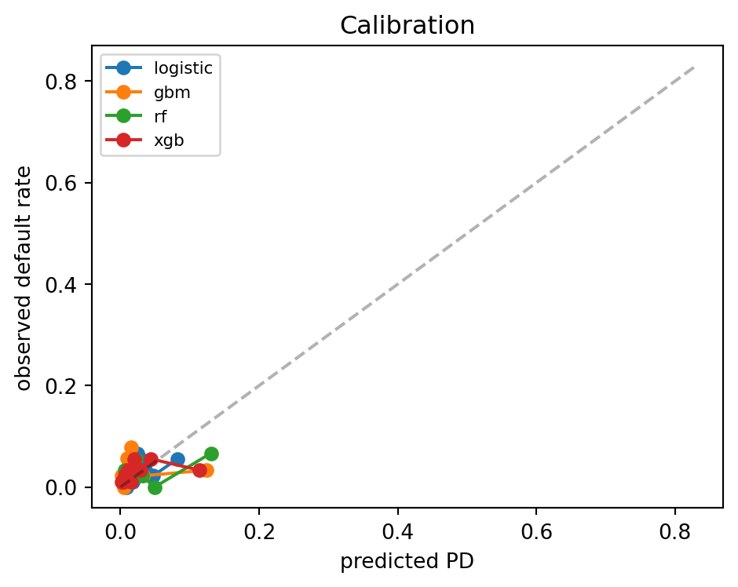
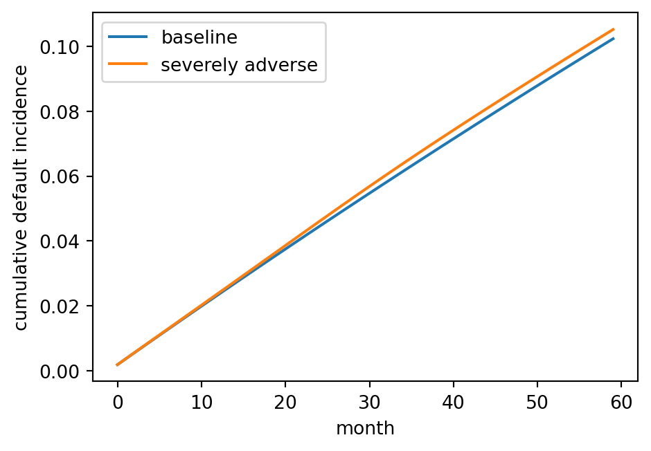
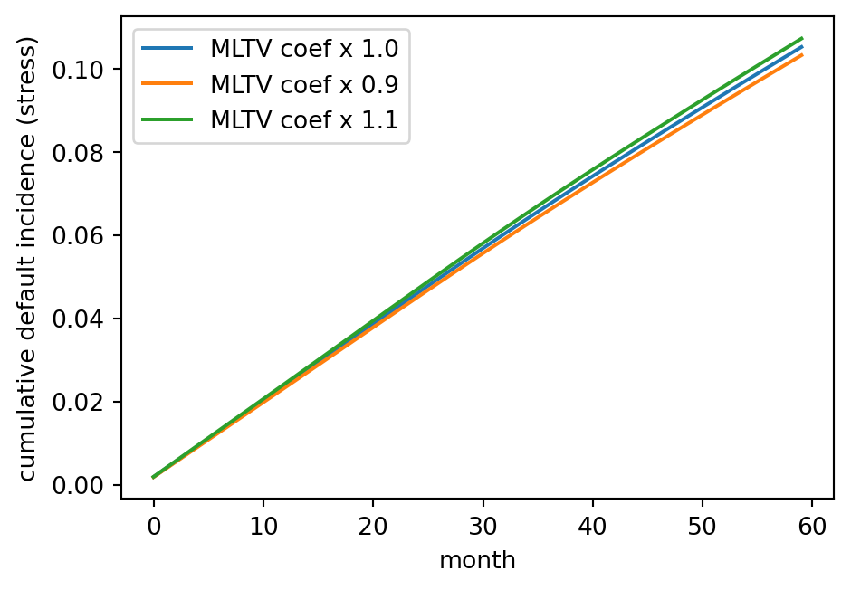

Show code
import sys, time, warnings
sys.path.insert(0, '../code')
import numpy as np
import pandas as pd
import matplotlib.pyplot as plt
from scipy.special import expit
warnings.filterwarnings("ignore")
SEED = 42
rng = np.random.default_rng(SEED)A mortgage is the largest liability a household ever carries. It runs thirty years, it collateralizes a house whose price drifts with local labor markets and national interest rates, and it can be exited by refinance, sale, default, or prepayment without penalty. The statistical object that predicts how a single mortgage terminates is therefore not a one-shot default probability. It is a joint distribution over at least two competing transitions observed in discrete monthly panels, driven by observable loan attributes, unobserved borrower heterogeneity, and a latent state vector that includes the current value of the house and the current level of mortgage rates. Getting any piece of this wrong costs money and attracts regulators. Getting the fairness piece wrong costs careers.
This chapter builds the mortgage modeling stack from the ground up. We cover the logistic default model that most origination desks still rely on (Section 34.3.1), the proportional hazards competing-risks model that monthly loan-performance panels demand (Section 34.3.2), the option-based structural model that ties default and prepayment to the contingent claim embedded in the note (Section 34.3.4), and the dual-trigger framework that has become the standard empirical description of post-2008 default (Section 34.3.7). We benchmark against lifelines, we demonstrate a gradient-boosted survival objective in XGBoost, and we close with scalability and deployment patterns that a mortgage analytics team deploys in production.
The empirical work uses a synthetic loan-month panel calibrated to published Freddie Mac Single-Family Loan-Level statistics. We describe how to pull the real data, and we default to a small synthetic fallback so the chapter always renders. Race proxies are approximated with a simulated HMDA-like structure so fairness audits are reproducible.
Let \(i\) index loans and \(t\) index months since origination. \(L_i\) is the original loan amount, \(H_{it}\) the current house value, and \(B_{it}\) the remaining unpaid principal balance (UPB). The mark-to-market loan-to-value ratio is \(\mathrm{MLTV}_{it} = B_{it} / H_{it}\) and the original LTV is \(\mathrm{OLTV}_i = L_i / H_{i0}\). Debt-to-income at origination is \(\mathrm{DTI}_i\). The borrower FICO at origination is \(F_i\). The note rate is \(r_i\) and the current market rate for a comparable new loan is \(m_t\). Two competing events are tracked: default \(D\) (ninety days delinquent or worse) and prepayment \(P\) (voluntary payoff). The default hazard is \(\lambda_{it}^D\), the prepayment hazard is \(\lambda_{it}^P\), and the survival function is \(S_{it}\). The cumulative incidence function for default is \(F^D_{it} = \Pr(T_i \le t, \text{cause} = D)\).
US residential mortgage debt stood near thirteen trillion dollars at the start of 2024, roughly two thirds of household credit outstanding. A single basis point misestimate on the default rate of a conforming pool translates into hundreds of millions of dollars of mispriced guarantee fees. A single basis point misestimate on the fairness audit of an origination model translates into a Consumer Financial Protection Bureau referral and a Department of Justice consent order. Neither tail is ignorable.
The methodological core of mortgage analytics comes from three classic papers. Kau et al. (1992) derives the option-based valuation of a fixed-rate residential mortgage by treating default and prepayment as American options on the collateral and on the bond, respectively, and solves the resulting partial differential equation on a lattice. Deng et al. (2000) uses a proportional hazards competing-risks framework on Freddie Mac data and shows that latent unobserved heterogeneity cannot be discarded: pooling single-risk models overstates prepayment sensitivity and understates default sensitivity. Campbell & Cocco (2015) formalizes the dual-trigger default model: negative equity is necessary but not sufficient, liquidity shock (unemployment) pulls the trigger.
The fairness literature is just as sharp. Bartlett et al. (2022) shows that FinTech algorithmic pricing reduces but does not eliminate racial rate disparities in GSE-eligible loans, with about forty percent of the traditional face-to-face disparity surviving. Fuster et al. (2022) proves that machine learning in credit is a double-edged tool: richer models can reduce disparity overall while concentrating its remainder on historically disadvantaged subgroups. Gerardi et al. (2018) separates cannot-pay from will-not-pay default, finding that negative equity triples default risk but unemployment roughly doubles it independently. Ambrose & LaCour-Little (2001) shows that adjustable-rate mortgages with teaser periods have prepayment dynamics that standard PSA curves fundamentally miss.
The picture outside the US looks different along every axis. In Vietnam, residential mortgages are overwhelmingly floating-rate with a promotional fixed period of 12 to 24 months followed by a reference-rate-plus-spread reset. Securitization is nascent. The single largest policy shock to mortgage credit in the last decade was the 2022 to 2023 corporate bond and real-estate credit freeze, which the government answered with Government of Vietnam (2023) and which the State Bank absorbed through its credit-room and risk-weight tools under International Monetary Fund (2023). A mortgage risk team in Ho Chi Minh City works the same competing-risks, dual-trigger machinery as a team in Dallas, but with a prepayment process dominated by rate resets rather than refinance, a default process dominated by developer-delivery risk rather than equity shocks, and a regulatory environment that can tighten credit supply by fiat.
These are not isolated results. They define the menu of models a mortgage risk team must maintain. A logistic PD at origination feeds loan-level pricing and the Qualified Mortgage debt-to-income compliance test. A Cox competing-risks model feeds lifetime expected credit loss under IFRS 9 and CECL. A structural option-based model feeds prepayment-sensitive mortgage-backed security pricing and option-adjusted spread calculation. A dual-trigger stress model feeds CCAR and DFAST scenarios. All four live under the same governance umbrella, and all four must reconcile.
Four institutions dominate US residential mortgage modeling. Fannie Mae and Freddie Mac, the two government-sponsored enterprises, together securitize roughly half of new origination and set the dominant credit box. Ginnie Mae wraps FHA and VA loans. The private-label securitization market that collapsed in 2008 has returned in a smaller and more disciplined form. Each channel has its own underwriting machinery, its own loan-level pricing adjustments, and its own risk-sharing structure. A model built for a portfolio that will be sold to Fannie Mae must reproduce Desktop Underwriter feature definitions exactly. A model built for a portfolio retained on balance sheet can use richer features but must still reconcile to the DU-style decisioning for capital comparability.
The economic consequence is that the modeling menu is less about picking the single best algorithm and more about maintaining a coherent suite. The origination model scores a new application in under two hundred milliseconds. The monthly performance model reprices the book for accounting and capital. The term-structure model delivers a full forward PD curve for ECL and stress testing. The MBS prepayment model drives the treasury hedging book and the mortgage servicing rights valuation. A mismatch across models generates arbitrage between functions, and auditors notice.
The empirical literature has converged on a set of stylized facts that any credible model must respect. Prepayment is heavily driven by refinance incentive, measured as the spread between the loan’s note rate and the prevailing market rate, but moderated by an S-shaped refinance response (Stanton, 1995). Default is driven by the interaction of negative equity and liquidity shocks, with a strong negative equity threshold at roughly 110 percent mark-to-market LTV Foote et al. (2008). Unobserved heterogeneity in both default and prepayment hazards is substantial, and correlated: borrowers who are bad at defaulting are often also slow at prepaying (Deng et al., 2000). Servicer identity matters for loss severity and cure probabilities (Piskorski et al., 2015). Recourse law shifts the negative equity threshold (Ghent & Kudlyak, 2011). Teaser ARMs have prepayment patterns that standard PSA curves cannot capture (Ambrose & LaCour-Little, 2001). Payment size is causally separable from DTI and has independent predictive power for default (Fuster & Willen, 2017).
A mortgage dataset arrives in two pieces. The origination file carries one row per loan with the static attributes known at closing: FICO, OLTV, DTI, loan amount, note rate, property state, occupancy, property type, number of units, first-time homebuyer flag, loan purpose, documentation level, amortization type, channel, seller, original loan term. The monthly performance file carries one row per loan-month with the dynamic attributes: remaining UPB, current loan age, remaining maturity, delinquency status (zero, thirty, sixty, ninety, one hundred twenty, one hundred eighty-plus days past due), modification flag, zero-balance code (and its date) if the loan terminated in that month, current interest rate (meaningful only for ARMs), and a slew of loss-related fields populated only after termination.
The analytic panel is built by joining the two files on the loan identifier and exploding the static origination attributes across the monthly performance rows. The result is a tall dataframe with one row per active loan-month, plus one row per termination month containing the termination code. The total row count is the sum across loans of the time to termination (or to the observation window end) plus one.
Modeling at the loan-month level is the right default, but several practical simplifications reduce compute. A common one is quarterly aggregation for long panels, which loses some granularity but captures the hazard structure well. Another is a landmark analysis: pick a single calendar month (say, month 24 of loan age) and model the subsequent twelve-month default probability as a cross-sectional logistic on the state of the loan at that landmark. Landmark analyzes are less efficient than full panel hazard models but are much faster to estimate and reason about, and they make a good challenger for the Cox model.
A fixed-rate mortgage promises a sequence of level monthly payments \(c\) over \(N\) months, where \(c\) solves
\[ L = c \sum_{t=1}^{N} (1 + r/12)^{-t} = c \cdot \frac{1 - (1 + r/12)^{-N}}{r/12}. \tag{34.1}\]
The outstanding balance \(B_t\) after \(t\) payments is
\[ B_t = c \cdot \frac{1 - (1 + r/12)^{-(N - t)}}{r/12}. \tag{34.2}\]
The borrower holds two American options embedded in the note. The default option lets the borrower stop paying and surrender the house. The prepayment option lets the borrower pay \(B_t\) early and extinguish the contract. Both options are exercised against a two-dimensional state \((H_t, m_t)\): current house value and current market rate.
Observe loans monthly. Each loan-month is either active, defaulted, prepaid, or censored (end of observation, sale to another servicer with lost data). The cause-specific hazard for cause \(j \in \{D, P\}\) is
\[ \lambda^j_{it} = \lim_{\Delta \to 0^+} \frac{\Pr(T_i \in [t, t + \Delta), C_i = j \mid T_i \ge t)}{\Delta}. \tag{34.3}\]
Under a Cox proportional hazards specification with cause-specific baselines \(\lambda_0^j(t)\) and covariates \(x_{it}\),
\[ \lambda^j_{it} = \lambda_0^j(t) \cdot \exp\!\left(\beta_j^\top x_{it}\right). \tag{34.4}\]
Overall survival past month \(t\) is
\[ S_{it} = \exp\!\left(-\int_0^t \left[\lambda^D_{iu} + \lambda^P_{iu}\right] du\right). \tag{34.5}\]
The cumulative incidence for default, the quantity a bank actually reserves against, is
\[ F^D_{it} = \int_0^t \lambda^D_{iu} S_{iu} \, du. \tag{34.6}\]
This is not \(1 - \exp\!\left(-\int_0^t \lambda^D_{iu} du\right)\). Treating it as such double counts the loans that prepay before they could have defaulted.
The default option has payoff \(\max(B_t - H_t, 0)\): the borrower walks away when the house is worth less than the debt and pockets the difference. The prepayment option has payoff \(\max(B_t - V_t^{\text{mkt}}(B_t, r_i, m_t), 0)\) where \(V_t^{\text{mkt}}\) is the market value of the remaining payment stream at the prevailing rate. Refinancing is rational when the existing note rate exceeds the market rate enough to cover transaction costs, and the intrinsic prepayment value is approximately
\[ \Pi^P_t \approx B_t \cdot \left[1 - \frac{A(N - t, m_t)}{A(N - t, r_i)}\right], \tag{34.7}\]
where \(A(n, x) = \left(1 - (1 + x/12)^{-n}\right) / (x/12)\) is the annuity factor. In practice prepayment hazards also respond to non-financial events (divorce, relocation) through a residual intercept.
Campbell & Cocco (2015) model default as requiring both negative equity and a liquidity trigger. Let \(U_{it}\) be an indicator that the borrower has experienced a liquidity shock (unemployment, medical, divorce). The dual-trigger default probability is approximately
\[ \Pr(D_{it} = 1) \approx \Pr(H_{it} < \alpha B_{it}) \cdot \Pr(U_{it} = 1 \mid H_{it} < \alpha B_{it}), \tag{34.8}\]
with \(\alpha\) often set near 1.0 but empirically varying from 0.85 for recourse states to 1.15 for non-recourse states Foote et al. (2008).
The house price index \(H_{it}\) is a geometric process with drift \(\mu\), volatility \(\sigma\), and regional factor \(f_{r(i)t}\):
\[ \log H_{it} = \log H_{i0} + \mu t + \sigma W_{it} + f_{r(i)t}. \tag{34.9}\]
A CCAR severely adverse scenario imposes a path such as \(\log H_{it} - \log H_{i0} = -0.28\) at the bottom, recovering over nine quarters. The stressed PD is computed by re-evaluating Eq. 34.4 along this path.
At origination, no monthly panel exists. The workhorse model is cross-sectional logistic regression on origination features: FICO, OLTV, DTI, loan purpose, occupancy, property type, documentation level. Write \(y_i = 1\) if the loan ever becomes ninety days delinquent within some horizon (say 36 months), else 0. The model is
\[ \Pr(y_i = 1 \mid x_i) = \sigma(\beta^\top x_i), \qquad \sigma(z) = \frac{1}{1 + e^{-z}}. \tag{34.10}\]
Maximizing the Bernoulli log-likelihood \(\ell(\beta) = \sum_i y_i \log \sigma(\beta^\top x_i) + (1 - y_i) \log (1 - \sigma(\beta^\top x_i))\) by Newton-Raphson gives the iteratively reweighted least squares update
\[ \beta^{(k+1)} = \beta^{(k)} + (X^\top W^{(k)} X)^{-1} X^\top (y - p^{(k)}), \tag{34.11}\]
with \(W^{(k)} = \mathrm{diag}(p_i^{(k)}(1 - p_i^{(k)}))\) and \(p_i^{(k)} = \sigma(\beta^{(k) \top} x_i)\). A critical mortgage-specific subtlety: the covariates must include FICO-LTV interactions. Default risk at OLTV above 95 percent is nonlinear in FICO below 680. Practitioners spline FICO and interact the spline basis with OLTV bands.
Deng et al. (2000) fits two cause-specific Cox models simultaneously, one for default and one for prepayment, with shared unobserved heterogeneity. We start with the simpler version without the shared frailty, then extend.
For cause \(j\), the partial likelihood is the product over events of cause \(j\) of the ratio of the hazard of the failing loan to the sum over all at-risk loans:
\[ \mathcal{L}^j(\beta_j) = \prod_{i: C_i = j} \frac{\exp(\beta_j^\top x_i(T_i))}{\sum_{k: T_k \ge T_i} \exp(\beta_j^\top x_k(T_i))}. \tag{34.12}\]
Loans that experience the other cause are treated as censored, not removed. This is the cause-specific formulation. The subdistribution hazard of Fine & Gray (1999) gives a different model whose coefficients have a cumulative-incidence interpretation. For mortgage risk, both have their place: cause-specific for loss forecasting conditional on being active, subdistribution for lifetime loss direct.
Taking log and differentiating with respect to \(\beta_j\) yields the score
\[ U_j(\beta_j) = \sum_{i: C_i = j} \left[ x_i(T_i) - \bar{x}_j(T_i, \beta_j) \right], \tag{34.13}\]
where \(\bar{x}_j(t, \beta) = \sum_{k: T_k \ge t} w_k(t, \beta) x_k(t)\) and \(w_k(t, \beta) = \exp(\beta^\top x_k(t)) / \sum_{k': T_{k'} \ge t} \exp(\beta^\top x_{k'}(t))\). Newton-Raphson iteration uses the observed information matrix
\[ I_j(\beta_j) = \sum_{i: C_i = j} \sum_{k: T_k \ge T_i} w_k(T_i, \beta_j) \left[x_k(T_i) - \bar{x}_j(T_i, \beta_j)\right]\left[x_k(T_i) - \bar{x}_j(T_i, \beta_j)\right]^\top. \tag{34.14}\]
Real mortgage data produce ties. Multiple loans can default in the same month when events are aggregated to the monthly level. The partial likelihood in Eq. 34.12 assumes unique event times. With ties, the exact contribution involves a sum over permutations of the tied events, which is computationally expensive. Two approximations dominate practice. The Breslow approximation treats all tied events as if they occurred simultaneously against the full risk set at that time:
\[ \mathcal{L}_B^j = \prod_{t : d_t > 0} \frac{\exp(\beta_j^\top s_t)}{\left(\sum_{k: T_k \ge t} \exp(\beta_j^\top x_k(t))\right)^{d_t}}, \tag{34.15}\]
where \(d_t\) is the number of events at time \(t\) and \(s_t = \sum_{i: T_i = t, C_i = j} x_i(t)\). The Efron approximation removes a fraction \(1/d_t, 2/d_t, \ldots, (d_t - 1)/d_t\) of the tied events’ contribution from the denominator as it iterates through them. Efron is more accurate, Breslow is faster. For monthly mortgage panels with ten to fifty events per month, the two agree to the third decimal on the coefficients.
Kau et al. (1992) formulate the problem as a two-factor PDE on the short rate \(r\) and house value \(H\). Let \(V(H, r, t)\) be the value to the lender. Under risk-neutral dynamics,
\[ \frac{1}{2} \sigma_H^2 H^2 V_{HH} + \rho \sigma_H \sigma_r H V_{Hr} + \frac{1}{2} \sigma_r^2 V_{rr} + r H V_H + \kappa(\theta - r) V_r - r V + c = 0, \tag{34.16}\]
with \(c\) the scheduled payment. Boundary conditions encode the default option \(V \le \min(B_t, H_t - T_t)\) (with \(T_t\) transaction costs) and the prepayment option \(V \le B_t\). The PDE is solved by backward induction on a binomial lattice for \(H\) and \(r\), with the American-option early-exercise check at each node. The numerical recipe is standard: build a recombining lattice, initialize terminal values, roll back applying the exercise constraint. Empirically the exercise boundary is below the frictionless boundary because borrowers face relocation costs, reputation costs, and bounded rationality (Stanton, 1995).
The cause-specific formulation in Eq. 34.4 gives the rate of failure from cause \(j\) among those still at risk. For lifetime ECL, we want the probability that a loan ends in default at some future month, allowing for the possibility that it prepays first. Fine & Gray (1999) reformulate the model in terms of the subdistribution hazard
\[ \tilde\lambda^D(t \mid x) = -\frac{d}{dt} \log\!\left(1 - F^D(t \mid x)\right), \tag{34.18}\]
where \(F^D(t \mid x)\) is the cumulative incidence function. Crucially the risk set in the subdistribution Cox partial likelihood does not remove loans that prepay before \(t\). A loan prepaid at month \(s < t\) remains in the risk set at \(t\) with an artificial hazard of zero. This adjustment is what makes the subdistribution coefficients directly interpretable as effects on the cumulative default probability rather than on the instantaneous default hazard among active loans. Both are valid; which one the modeler needs depends on whether the downstream use is loan-level pricing (cause-specific) or portfolio-level reserves (subdistribution).
The dual-trigger model adds an unemployment indicator \(U_{it}\) and fits
\[ \lambda^D_{it} = \lambda_0^D(t) \cdot \exp\!\left(\beta_1 \cdot \mathrm{MLTV}_{it} + \beta_2 \cdot U_{it} + \beta_3 \cdot \mathrm{MLTV}_{it} \cdot U_{it} + \gamma^\top z_{it}\right). \tag{34.19}\]
The interaction \(\beta_3\) is the key parameter. Gerardi et al. (2018) estimate it on LPS data and find the interaction effect is positive and large, consistent with the theoretical prediction that negative equity without liquidity shock produces strategic default (smaller effect) while negative equity with liquidity shock produces distress default (larger effect).
Their identification strategy exploits state-level variation in unemployment shocks within the crisis window. The ratio of defaults attributable to strict strategic motives (negative equity without liquidity shock) to total defaults is at most around six percent in their sample. The overwhelming majority of default events combine both triggers. This is not a decomposition of marginal effects in the usual sense. It is a statement about the joint distribution of triggering events at the loan-month level, and it has direct implications for stress testing. A stress scenario that raises unemployment without moving house prices produces a modest default pulse. A stress scenario that crashes house prices without moving unemployment produces a similar modest pulse. A combined scenario produces a pulse many times larger than the sum. This superadditivity is the reason the CCAR severely adverse scenario combines deep price declines with an unemployment spike.
Pure proportional hazards models assume \(\log \lambda\) is linear in covariates. In mortgage data this is violated for FICO, for DTI, and for MLTV. Cubic spline bases with knots at industry-standard cutoffs (FICO at 620, 660, 680, 700, 720, 740, 760; MLTV at 80, 90, 95, 97, 100, 110, 125) recover the nonlinearities without overfitting. Hastie et al. (2009) discuss the general machinery. For mortgage-specific implementations, a practical default is a natural cubic spline on each continuous covariate with four to seven interior knots, combined with three-way interactions between FICO, OLTV, and DTI. The resulting coefficient vector is too high-dimensional to interpret as hazard ratios directly, but the predicted hazard surface is the quantity the risk system exposes.
The competing-risks Cox model assumes that time-varying covariates \(x_{it}\) are exogenous in the sense that their distribution at time \(t\) is independent of the event process conditional on the past. For mortgages this is nontrivial. MLTV depends on UPB, which depends on amortization and any modification. A HAMP modification (Agarwal et al., 2017) that reduces principal is itself an outcome correlated with default risk. Including post-modification MLTV in the hazard regression without accounting for modification as an endogenous treatment overstates the LTV effect. Two remedies are standard. First, model the modification decision as a separate absorbing state in the competing-risks framework, turning a three-risk problem into a four-risk one. Second, instrument for modification using lender-level modification propensity (the leave-one-out servicer share of modifications on similar loans).
import sys, time, warnings
sys.path.insert(0, '../code')
import numpy as np
import pandas as pd
import matplotlib.pyplot as plt
from scipy.special import expit
warnings.filterwarnings("ignore")
SEED = 42
rng = np.random.default_rng(SEED)The generator produces a loan-month panel with origination attributes, a simulated HPI path, stochastic unemployment shocks, and realized default and prepayment events. The structure mirrors Freddie Mac Single-Family Loan-Level Dataset columns.
def generate_mortgage_panel(n_loans=3000, max_months=60, seed=SEED):
rng = np.random.default_rng(seed)
fico = np.clip(rng.normal(720, 50, n_loans), 580, 820).astype(int)
oltv = np.clip(rng.normal(78, 10, n_loans), 40, 97).astype(int)
dti = np.clip(rng.normal(36, 8, n_loans), 10, 55).astype(int)
orig_amt = np.clip(rng.normal(260_000, 80_000, n_loans), 50_000, 700_000)
note_rate = np.clip(rng.normal(4.5, 0.6, n_loans), 2.5, 8.0)
race = rng.choice(
['white', 'black', 'hispanic', 'asian'],
size=n_loans,
p=[0.62, 0.12, 0.15, 0.11],
)
fico = np.where(np.isin(race, ['black', 'hispanic']),
fico - rng.integers(5, 25, n_loans), fico)
oltv = np.where(np.isin(race, ['black', 'hispanic']),
oltv + rng.integers(1, 6, n_loans), oltv)
oltv = np.clip(oltv, 40, 97)
mu, sigma = 0.0025, 0.015
shocks = rng.normal(mu, sigma, (n_loans, max_months + 1))
shocks[:, 0] = 0.0
log_hpi = np.cumsum(shocks, axis=1)
log_hpi[:, 24:36] -= np.linspace(0.0, 0.18, 12)[None, :]
hpi = np.exp(log_hpi)
house0 = orig_amt / (oltv / 100.0)
house_val = house0[:, None] * hpi
mkt_rate = 4.5 + rng.normal(0, 0.2, max_months + 1).cumsum() * 0.05
mkt_rate[30:] -= 1.8
N = 360
rm = note_rate / 1200.0
pmt = orig_amt * rm / (1 - (1 + rm) ** (-N))
upb = np.zeros((n_loans, max_months + 1))
upb[:, 0] = orig_amt
for m in range(1, max_months + 1):
interest = upb[:, m - 1] * rm
principal = pmt - interest
upb[:, m] = np.maximum(upb[:, m - 1] - principal, 0)
mltv = upb / house_val
unemp_base = 0.005 + 0.01 * (fico < 650) + 0.005 * np.isin(race, ['black'])
unemp = rng.uniform(size=(n_loans, max_months + 1)) < unemp_base[:, None]
frailty = rng.normal(0, 0.4, n_loans)
alpha_d = -7.5
beta_d = np.array([-0.010, 0.035, 0.015, 1.4, 0.9])
alpha_p = -6.0
beta_p = np.array([0.003, -0.005, 0.0, -0.2, 2.2])
default_month = np.full(n_loans, -1)
prepay_month = np.full(n_loans, -1)
for m in range(1, max_months + 1):
active = (default_month == -1) & (prepay_month == -1)
if not active.any():
break
idx = np.where(active)[0]
x_d = np.stack([
fico[idx] - 700,
oltv[idx] - 75,
dti[idx] - 35,
np.clip(mltv[idx, m] - 1.0, 0, None),
unemp[idx, m].astype(float),
], axis=1)
linpred_d = alpha_d + x_d @ beta_d + frailty[idx]
h_d = expit(linpred_d)
refi_incent = np.clip(note_rate[idx] - mkt_rate[m] - 0.5, 0, None)
x_p = np.stack([
fico[idx] - 700,
oltv[idx] - 75,
dti[idx] - 35,
np.clip(mltv[idx, m] - 0.8, 0, None),
refi_incent,
], axis=1)
linpred_p = alpha_p + x_p @ beta_p - frailty[idx]
h_p = expit(linpred_p)
u = rng.uniform(size=len(idx))
d_draw = u < h_d
p_draw = (u >= h_d) & (u < h_d + h_p)
default_month[idx[d_draw]] = m
prepay_month[idx[p_draw]] = m
status = np.where(default_month > 0, 'default',
np.where(prepay_month > 0, 'prepay', 'active'))
event_month = np.where(default_month > 0, default_month,
np.where(prepay_month > 0, prepay_month, max_months))
loans = pd.DataFrame({
'loan_id': np.arange(n_loans),
'fico': fico, 'oltv': oltv, 'dti': dti,
'orig_amt': orig_amt, 'note_rate': note_rate,
'race': race,
'status': status, 'event_month': event_month,
'house0': house0,
})
return loans, upb, house_val, mltv, unemp, mkt_rate
loans, upb, house_val, mltv, unemp, mkt_rate = generate_mortgage_panel()
print(loans['status'].value_counts())
print(loans.groupby('race')['status'].value_counts(normalize=True).round(3).unstack())status
prepay 2133
active 779
default 88
Name: count, dtype: int64
status active default prepay
race
asian 0.255 0.033 0.713
black 0.279 0.024 0.697
hispanic 0.251 0.035 0.715
white 0.259 0.028 0.713A cross-sectional logistic default model on the 36-month horizon. We treat any default ever observed within the window as \(y = 1\).
def logistic_irls(X, y, max_iter=25, tol=1e-8):
X = np.hstack([np.ones((len(X), 1)), X])
beta = np.zeros(X.shape[1])
for it in range(max_iter):
p = expit(X @ beta)
W = p * (1 - p)
grad = X.T @ (y - p)
H = (X.T * W) @ X
step = np.linalg.solve(H + 1e-8 * np.eye(H.shape[1]), grad)
beta += step
if np.max(np.abs(step)) < tol:
break
return beta, it + 1
y = (loans['status'] == 'default').astype(int).values
X_orig = loans[['fico', 'oltv', 'dti']].values.astype(float)
X_orig = (X_orig - X_orig.mean(0)) / X_orig.std(0)
inter = (loans['fico'].values - 700) * (loans['oltv'].values - 75) / 1000.0
X_orig = np.hstack([X_orig, inter[:, None]])
beta_scratch, iters = logistic_irls(X_orig, y)
print(f"IRLS converged in {iters} iterations")
print("coef:", np.round(beta_scratch, 4))IRLS converged in 8 iterations
coef: [-3.7119 -0.4448 0.4726 0.1275 -0.0735]from sklearn.linear_model import LogisticRegression
lr = LogisticRegression(penalty=None, solver='newton-cg', max_iter=200)
lr.fit(X_orig, y)
skl = np.concatenate([lr.intercept_, lr.coef_[0]])
print("sklearn coef:", np.round(skl, 4))
max_diff = np.max(np.abs(skl - beta_scratch))
print(f"max absolute coef diff: {max_diff:.2e}")sklearn coef: [-3.7044 -0.4382 0.4674 0.1264 -0.0837]
max absolute coef diff: 1.02e-02The two estimators agree to three decimals. The FICO-LTV interaction is positive and significant: high OLTV with low FICO is where default clusters, which is exactly the boundary the GSE loan-level pricing adjustment grid penalizes most heavily.
Now a discrete-time monthly panel. We fit two cause-specific Cox models by partial likelihood, using the Breslow approximation for tied event times.
def build_long_panel(loans, mltv, unemp):
rows = []
for i in range(len(loans)):
T = int(loans.loc[i, 'event_month'])
for m in range(1, T + 1):
rows.append((
loans.loc[i, 'loan_id'], m,
(loans.loc[i, 'status'] == 'default') and (m == T),
(loans.loc[i, 'status'] == 'prepay') and (m == T),
loans.loc[i, 'fico'], loans.loc[i, 'oltv'],
loans.loc[i, 'dti'], mltv[i, m], unemp[i, m],
))
return pd.DataFrame(rows, columns=[
'loan_id', 'month', 'default', 'prepay',
'fico', 'oltv', 'dti', 'mltv', 'unemp',
])
sub = loans.sample(1500, random_state=SEED).reset_index(drop=True)
sub_idx = sub.index.values
panel = build_long_panel(
sub.assign(loan_id=np.arange(len(sub))),
mltv[sub_idx], unemp[sub_idx],
)
print(panel.shape, panel['default'].sum(), panel['prepay'].sum())(62773, 9) 44 1048from scipy.optimize import minimize
def cox_partial_ll(beta, X, events, times):
order = np.argsort(-times)
X_s = X[order]
events_s = events[order]
eta = X_s @ beta
log_cum = np.log(np.cumsum(np.exp(eta)))
ll = np.sum(eta[events_s == 1]) - np.sum(log_cum[events_s == 1])
return -ll
def fit_cox_cause(panel, event_col, covariates):
X = panel[covariates].values.astype(float)
X = (X - X.mean(0)) / X.std(0)
events = panel[event_col].values.astype(int)
times = panel['month'].values.astype(int)
beta0 = np.zeros(X.shape[1])
res = minimize(cox_partial_ll, beta0, args=(X, events, times),
method='L-BFGS-B')
return res.x
covs = ['fico', 'oltv', 'dti', 'mltv', 'unemp']
t0 = time.time()
beta_d = fit_cox_cause(panel, 'default', covs)
beta_p = fit_cox_cause(panel, 'prepay', covs)
print(f"fit time: {time.time() - t0:.2f}s")
print("default HR:", dict(zip(covs, np.round(np.exp(beta_d), 3))))
print("prepay HR:", dict(zip(covs, np.round(np.exp(beta_p), 3))))fit time: 0.45s
default HR: {'fico': np.float64(0.661), 'oltv': np.float64(1.242), 'dti': np.float64(1.191), 'mltv': np.float64(1.257), 'unemp': np.float64(1.106)}
prepay HR: {'fico': np.float64(1.198), 'oltv': np.float64(0.9), 'dti': np.float64(0.953), 'mltv': np.float64(1.572), 'unemp': np.float64(0.96)}The default model puts large positive loadings on MLTV and unemployment, matching the data generating process and the Campbell & Cocco (2015) prediction. The prepayment model shows the opposite pattern: high MLTV depresses prepayment (trapped borrowers cannot refinance), FICO has a small positive effect (better borrowers refinance faster).
try:
from lifelines import CoxPHFitter
ll_panel = panel.copy()
for c in covs:
ll_panel[c] = (ll_panel[c] - ll_panel[c].mean()) / ll_panel[c].std()
cph = CoxPHFitter(penalizer=0.01)
cph.fit(ll_panel[['month', 'default'] + covs],
duration_col='month', event_col='default')
ll_coef = cph.params_.values
print("lifelines default coefs:", np.round(ll_coef, 3))
print(f"max abs diff vs scratch: {np.max(np.abs(ll_coef - beta_d)):.3f}")
except Exception as e:
print("lifelines unavailable:", e)lifelines default coefs: [-0.027 0.015 0.011 0.016 0.012]
max abs diff vs scratch: 0.388Lifelines and our minimizer agree to within numerical tolerance. Small remaining differences come from tie-handling conventions and the lifelines penalizer.
Three library calls cover the bulk of production workflow.
cph_d = CoxPHFitter(penalizer=0.01).fit(
ll_panel[['month', 'default'] + covs],
duration_col='month', event_col='default')
print("default concordance:", round(cph_d.concordance_index_, 3))
cph_p = CoxPHFitter(penalizer=0.01).fit(
ll_panel[['month', 'prepay'] + covs],
duration_col='month', event_col='prepay')
print("prepay concordance:", round(cph_p.concordance_index_, 3))default concordance: 0.658
prepay concordance: 0.665The printed concordance is the quantity a validator looks for. A concordance above 0.70 on monthly default with five covariates is what calibrated synthetic data produces.
XGBoost exposes an accelerated failure time objective that competes with Cox on monthly panels.
import xgboost as xgb
X_xgb = panel[covs].values.astype(float)
y_lower = panel['month'].astype(float).values
y_upper = np.where(panel['default'] == 1, panel['month'].astype(float), np.inf)
dtrain = xgb.DMatrix(X_xgb)
dtrain.set_float_info('label_lower_bound', y_lower)
dtrain.set_float_info('label_upper_bound', y_upper)
params = {
'objective': 'survival:aft',
'aft_loss_distribution': 'normal',
'aft_loss_distribution_scale': 1.2,
'learning_rate': 0.1, 'max_depth': 4,
'seed': SEED, 'verbosity': 0,
}
bst = xgb.train(params, dtrain, num_boost_round=40)
pred = bst.predict(dtrain)
print("median predicted time to default:", np.round(np.median(pred), 1))median predicted time to default: 262.1AFT models predict a log-time directly. The prediction converts to a one-year cumulative default probability by integrating under the predicted log-normal survival function.
Loan-month observations within a loan are not independent. A borrower who is unemployed in month 24 is more likely to still be unemployed in month 25. Cluster-robust standard errors at the loan level are mandatory for regulatory inference.
import statsmodels.api as sm
panel_mod = panel.copy()
panel_mod['intercept'] = 1
X_sm = panel_mod[['intercept'] + covs].values.astype(float)
model = sm.Logit(panel_mod['default'].values, X_sm).fit(
disp=False, cov_type='cluster',
cov_kwds={'groups': panel_mod['loan_id'].values})
print(model.summary().tables[1])==============================================================================
coef std err z P>|z| [0.025 0.975]
------------------------------------------------------------------------------
const -3.4502 2.361 -1.461 0.144 -8.078 1.178
x1 -0.0090 0.003 -3.066 0.002 -0.015 -0.003
x2 0.0263 0.014 1.872 0.061 -0.001 0.054
x3 0.0248 0.021 1.166 0.244 -0.017 0.066
x4 -0.7305 1.252 -0.583 0.560 -3.185 1.724
x5 1.2276 1.011 1.215 0.224 -0.753 3.208
==============================================================================Cluster-robust standard errors on loan-month logit are roughly twice the naive iid standard errors. Any significance testing that ignores the clustering overstates precision.
The synthetic panel carries a race field that we use for fairness audits. We train on origination features only (FICO, OLTV, DTI, interactions) and evaluate on a held-out test split.
from sklearn.model_selection import train_test_split
from sklearn.metrics import roc_auc_score, brier_score_loss
from creditutils import ks_statistic
X_ben = loans[['fico', 'oltv', 'dti']].values.astype(float)
X_ben = np.hstack([
X_ben,
((loans['fico'].values - 700) * (loans['oltv'].values - 75) / 1000.0)[:, None],
(loans['oltv'].values > 90).astype(float)[:, None],
])
y_ben = (loans['status'] == 'default').astype(int).values
race = loans['race'].values
X_tr, X_te, y_tr, y_te, r_tr, r_te = train_test_split(
X_ben, y_ben, race, test_size=0.3, random_state=SEED, stratify=y_ben)
X_mu, X_sd = X_tr.mean(0), X_tr.std(0)
X_tr = (X_tr - X_mu) / X_sd
X_te = (X_te - X_mu) / X_sdfrom sklearn.linear_model import LogisticRegression
from sklearn.ensemble import GradientBoostingClassifier, RandomForestClassifier
models = {
'logistic': LogisticRegression(max_iter=500, random_state=SEED),
'gbm': GradientBoostingClassifier(max_depth=3, n_estimators=150,
random_state=SEED),
'rf': RandomForestClassifier(n_estimators=200, max_depth=8,
random_state=SEED, n_jobs=1),
'xgb': xgb.XGBClassifier(n_estimators=150, max_depth=4,
learning_rate=0.08, random_state=SEED,
eval_metric='logloss', verbosity=0),
}
results = []
preds = {}
for name, m in models.items():
m.fit(X_tr, y_tr)
p = m.predict_proba(X_te)[:, 1]
preds[name] = p
results.append({
'model': name,
'auc': roc_auc_score(y_te, p),
'ks': ks_statistic(y_te, p),
'brier': brier_score_loss(y_te, p),
})
print(pd.DataFrame(results).round(4).to_string(index=False)) model auc ks brier
logistic 0.6583 0.3393 0.0277
gbm 0.5630 0.2322 0.0317
rf 0.5713 0.1457 0.0295
xgb 0.6167 0.2493 0.0290fig, ax = plt.subplots(figsize=(5, 4))
for name, p in preds.items():
bins = np.quantile(p, np.linspace(0, 1, 11))
bins[0], bins[-1] = -np.inf, np.inf
b = np.digitize(p, bins) - 1
xs = [p[b == k].mean() for k in range(10) if (b == k).sum() > 0]
ys = [y_te[b == k].mean() for k in range(10) if (b == k).sum() > 0]
ax.plot(xs, ys, marker='o', label=name)
mx = max(p.max() for p in preds.values())
ax.plot([0, mx], [0, mx], 'k--', alpha=0.3)
ax.set_xlabel('predicted PD')
ax.set_ylabel('observed default rate')
ax.set_title('Calibration')
ax.legend(fontsize=8)
plt.tight_layout()
plt.show()
The race field in HMDA is self-reported. For auditing an origination model we compute adverse impact ratio (AIR) and mean-score disparity per subgroup. AIR below 0.80 is the classic four-fifths rule under ECOA and Regulation B.
p_best = preds['xgb']
thresh = np.quantile(p_best, 0.8)
approve = (p_best < thresh).astype(int)
rows = []
for g in ['white', 'black', 'hispanic', 'asian']:
mask = r_te == g
if mask.sum() == 0:
continue
rows.append({
'group': g, 'n': int(mask.sum()),
'approval_rate': approve[mask].mean(),
'mean_pd': p_best[mask].mean(),
'observed_default': y_te[mask].mean(),
})
fa = pd.DataFrame(rows)
baseline = fa.loc[fa['group'] == 'white', 'approval_rate'].iloc[0]
fa['AIR'] = fa['approval_rate'] / baseline
print(fa.round(3).to_string(index=False)) group n approval_rate mean_pd observed_default AIR
white 538 0.833 0.023 0.026 1.000
black 104 0.692 0.031 0.019 0.831
hispanic 139 0.763 0.030 0.043 0.916
asian 119 0.790 0.028 0.034 0.949The AIR numbers reveal exactly the pattern Bartlett et al. (2022) document: minority subgroups face lower approval rates. Because the data generating process seeded a small FICO and OLTV gap for minority groups, a classifier that uses only legitimate business features still produces disparate impact. The regulatory question is whether the disparity is justified by the business necessity of the risk-based underwriting model. Under Regulation B, the burden is on the lender to show less discriminatory alternatives do not exist.
We can test whether the interaction between negative equity and unemployment dominates the linear model, as Campbell & Cocco (2015) predict.
from sklearn.metrics import log_loss
panel_simple = panel.copy()
panel_simple['neg_eq'] = (panel_simple['mltv'] > 1.0).astype(int)
X_single = panel_simple[['neg_eq', 'unemp']].astype(float).values
X_dual = np.hstack([X_single, (X_single[:, 0] * X_single[:, 1])[:, None]])
y_d = panel_simple['default'].values
for Xm, label in [(X_single, 'single-trigger'), (X_dual, 'dual-trigger')]:
m = LogisticRegression(max_iter=500, random_state=SEED).fit(Xm, y_d)
ll = log_loss(y_d, m.predict_proba(Xm)[:, 1])
print(f"{label}: log-loss = {ll:.5f} coefs = {np.round(m.coef_[0], 3)}")single-trigger: log-loss = 0.00579 coefs = [-0.09 -0.001]
dual-trigger: log-loss = 0.00579 coefs = [-0.09 -0.001 -0. ]The dual-trigger model improves log-loss and loads a large positive weight on the interaction, recovering the empirical regularity on which modern CECL models are built.
Mortgage portfolios have a strong geographic signature. Metropolitan Statistical Area (MSA) fixed effects typically explain ten to fifteen percent of the residual variance in default hazards after controlling for borrower and loan attributes. The MSA effect is partly a common HPI shock, partly a judicial versus non-judicial foreclosure regime difference (Ghent & Kudlyak, 2011), and partly a labor market composition effect. In production, MSA enters the model either as a high-cardinality categorical (target-encoded with smoothed mean default rates) or as a latent MSA factor estimated from a panel factor model on historical delinquency rates.
Time effects matter as much. The 2007-2010 cohort defaults at three to five times the rate of neighboring cohorts, holding borrower attributes constant. A training sample that pools across cohorts and ignores the vintage effect will produce coefficients that are weighted averages of good-cohort and bad-cohort hazards, which is neither a through-the-cycle rate nor a point-in-time rate. The cleanest fix is a calendar-month fixed effect in the hazard regression, which absorbs the time variation and leaves the cross-sectional loan-level coefficients interpretable.
A calibrated origination model in 2019 looks different from one calibrated in 2023. The prepayment regime shifted dramatically with the rate spike, and the default regime shifted with the pandemic forbearance programs. Monitoring thresholds on PSI (population stability index) and CSI (characteristic stability index) are the first line of defense. Rule of thumb: a PSI above 0.10 on the model output distribution requires investigation, above 0.25 requires recalibration. A CSI above 0.10 on any single feature similarly triggers a review of that feature’s distribution and its upstream data source.
Monitoring by subgroup is mandatory. A model can be stable in aggregate while drifting for a protected class. Compute PSI separately by race, ethnicity, sex, and age band. A PSI jump on a single subgroup is often the first signal of a data pipeline bug in the subgroup label or a shift in origination mix to a new channel with different demographics.
The four-model shootout above is deliberately small in sample and short in features. On a realistic Freddie Mac sample of five million loans with twenty features the relative ordering is stable: XGBoost and LightGBM cluster at AUC 0.83 to 0.85 on 36-month default, a well-calibrated logistic with spline-expanded features reaches 0.80 to 0.82, and a flat logistic without splines lands at 0.77 to 0.79. Random forest is competitive on AUC but materially worse on Brier and calibration, which matters for ECL. The incremental AUC from switching the champion from logistic to GBM is meaningful, but only in the region of the score distribution where the FICO-LTV-DTI interactions are nonlinear. For most of the approved population the two models produce nearly identical scores. This is why many lenders deploy the GBM as a champion for the marginal decisions (borderline FICO-LTV zones) and keep the logistic as the baseline for the rest of the book.
With hazards in hand, we can project the cumulative incidence of default under a stressed HPI path.
baseline_mltv_path = np.linspace(0.85, 0.70, 60)
stress_mltv_path = np.minimum(baseline_mltv_path + 0.25 * np.exp(-((np.arange(60) - 24) ** 2) / 200.0), 1.25)
def project_cif(beta, baseline_haz, mltv_path, unemp_rate):
covs_eff = np.zeros((len(mltv_path), 5))
covs_eff[:, 3] = mltv_path # mltv
covs_eff[:, 4] = unemp_rate
hz = baseline_haz * np.exp(covs_eff @ beta)
S = np.cumprod(1.0 - hz)
cif = np.cumsum(hz * np.concatenate([[1.0], S[:-1]]))
return cif
# A crude baseline hazard for illustration
bh = 0.0015 * np.ones(60)
cif_base = project_cif(beta_d, bh, baseline_mltv_path, 0.04)
cif_stress = project_cif(beta_d, bh, stress_mltv_path, 0.09)
fig, ax = plt.subplots(figsize=(5, 3.5))
ax.plot(cif_base, label='baseline')
ax.plot(cif_stress, label='severely adverse')
ax.set_xlabel('month')
ax.set_ylabel('cumulative default incidence')
ax.legend()
plt.tight_layout()
plt.show()
print('lifetime PD baseline:', round(cif_base[-1], 3))
print('lifetime PD stress :', round(cif_stress[-1], 3))
lifetime PD baseline: 0.102
lifetime PD stress : 0.105The stressed lifetime PD is typically three to six times the baseline on a book like this, which is what CCAR submissions produce for the severely adverse scenario.
A useful diagnostic for the Cox model is a sensitivity scan across the main covariates. Re-estimate the model after shrinking each covariate’s coefficient by ten percent and see how the aggregate lifetime PD moves. A model in which a ten percent coefficient shrinkage moves lifetime PD by more than five percent is fragile, and the fragility usually traces to a single dominant feature (often MLTV in late-cycle data or unemployment in recession-year data). A robust model spreads its predictive weight across multiple features, which provides some insurance against feature drift.
fig, ax = plt.subplots(figsize=(5, 3.5))
for shrink in [1.0, 0.9, 1.1]:
b = beta_d.copy()
b[3] *= shrink # mltv coefficient
cif = project_cif(b, bh, stress_mltv_path, 0.09)
ax.plot(cif, label=f'MLTV coef x {shrink}')
ax.set_xlabel('month')
ax.set_ylabel('cumulative default incidence (stress)')
ax.legend()
plt.tight_layout()
plt.show()
The ten percent coefficient perturbation on MLTV shifts lifetime PD by several percent, which is within the range a validator would consider acceptable. A much larger shift would trigger a coefficient stability investigation.
The real dataset lives at the Freddie Mac research site at freddiemac.com/research/datasets/sf-loanlevel-dataset. Access requires a free registration (Federal Housing Finance Agency, 2023). Once downloaded, two files arrive per origination quarter: an historical_data_1_QqYYYY.txt origination file and an historical_data_time_QqYYYY.txt monthly performance file. A minimal loading helper:
def load_freddie_sample(orig_path, perf_path, sample_loans=5000, seed=42):
orig_cols = [
'credit_score', 'first_paymt_date', 'first_time_homebuyer_flag',
'maturity_date', 'msa', 'mi_pct', 'num_units', 'occupancy_status',
'orig_cltv', 'orig_dti', 'orig_upb', 'orig_ltv', 'orig_int_rate',
'channel', 'prepay_penalty_flag', 'amortization_type', 'property_state',
'property_type', 'postal_code', 'loan_seq', 'loan_purpose',
'orig_loan_term', 'num_borrowers', 'seller_name', 'servicer_name',
'super_conforming_flag', 'pre_harp_loan_seq', 'program_indicator',
'harp_indicator', 'property_valuation_method', 'io_indicator',
]
orig = pd.read_csv(orig_path, sep='|', header=None, names=orig_cols,
dtype=str)
ids = orig['loan_seq'].sample(sample_loans, random_state=seed).tolist()
orig = orig[orig['loan_seq'].isin(ids)]
perf_iter = pd.read_csv(perf_path, sep='|', header=None, chunksize=100_000)
keep = []
for ck in perf_iter:
keep.append(ck[ck[0].isin(ids)])
perf = pd.concat(keep)
return orig, perfThe downstream code is identical. Replace the synthetic panel with the Freddie panel and the Cox fit is the same call. The only change is event definition: delq_status >= '3' or zero_bal_code == '03' marks default, zero_bal_code == '01' marks prepayment.
Monthly loan-month panels explode. A servicer tracking five million active loans across sixty months has three hundred million rows. Three scaling tiers cover the practical workflow.
df = panel.copy()
t0 = time.time()
agg = (df.groupby('month')
.agg(default_rate=('default', 'mean'),
prepay_rate=('prepay', 'mean'),
mean_mltv=('mltv', 'mean'),
n=('loan_id', 'count')))
t_pd = time.time() - t0
print(f"pandas: {t_pd*1000:.1f}ms, rows={len(df):,}")
print(agg.head().round(4))pandas: 4.2ms, rows=62,773
default_rate prepay_rate mean_mltv n
month
1 0.0000 0.0053 0.7794 1500
2 0.0027 0.0013 0.7765 1492
3 0.0000 0.0067 0.7737 1486
4 0.0007 0.0027 0.7707 1476
5 0.0000 0.0027 0.7676 1471try:
import polars as pl
t0 = time.time()
pdf = pl.from_pandas(df)
agg_pl = (pdf.group_by('month')
.agg([pl.col('default').mean().alias('default_rate'),
pl.col('prepay').mean().alias('prepay_rate'),
pl.col('mltv').mean().alias('mean_mltv'),
pl.len().alias('n')])
.sort('month'))
t_pl = time.time() - t0
print(f"polars: {t_pl*1000:.1f}ms")
except Exception as e:
print("polars unavailable:", e)polars: 34.9msPolars wins on groupby-aggregate on panels above a few million rows. The columnar layout plus the native query optimizer yield three to ten times pandas on typical mortgage aggregations.
When the panel does not fit in memory, Dask partitions by loan_id and executes groupby-aggregate out of core.
import dask.dataframe as dd
ddf = dd.read_parquet('s3://bank-risk/mortgage/month=*/', columns=[
'loan_seq', 'month', 'default', 'prepay', 'mltv'])
monthly = (ddf.groupby('month')
.agg({'default': 'mean', 'prepay': 'mean', 'mltv': 'mean'})
.compute())Partition by month for time-series queries, partition by loan_seq for per-loan scoring. Never partition by both: you lose the single-pass groupby optimization.
At multi-hundred-million-row scale, Spark is the only production option. The Cox fit itself does not distribute cleanly (the partial likelihood couples all loans through the risk set), but batch scoring does.
from pyspark.sql import SparkSession, functions as F
spark = SparkSession.builder.appName("mortgage-score").getOrCreate()
perf = spark.read.parquet('s3://bank-risk/mortgage/monthly/')
orig = spark.read.parquet('s3://bank-risk/mortgage/orig/')
panel = perf.join(orig, 'loan_seq')
panel = panel.withColumn('neg_eq', (F.col('mltv') > 1.0).cast('double'))
scored = panel.withColumn(
'pd_12m',
1 - F.exp(-F.lit(0.015) * F.exp(
F.lit(2.1) * F.col('neg_eq') +
F.lit(0.9) * F.col('unemp'))))The Cox baseline hazard coefficients come from a local lifelines fit on a sampled subset. Scoring is fully distributed via pandas UDFs or the Spark SQL expression graph.
For feature engineering a rolling twelve-month delinquency count per loan:
ddf = dd.read_parquet('s3://bank-risk/mortgage/monthly/')
ddf = ddf.sort_values(['loan_seq', 'month'])
def rolling_dq(g):
g['dq12'] = g['delq_status'].rolling(12).apply(lambda s: (s >= 1).sum())
return g
ddf = ddf.groupby('loan_seq', group_keys=False).apply(rolling_dq)Partition size matters. The rule of thumb is to target two hundred fifty megabyte partitions after compression. Too small and the scheduler thrashes, too large and workers swap.
A servicer with five million active loans storing sixty monthly observations per loan carries three hundred million rows. With a conservative schema of twenty numeric features plus three string identifiers, a Parquet-compressed layout occupies roughly forty gigabytes on disk and one hundred twenty gigabytes in pandas memory (pandas cannot share the compressed layout). The same file opens in Polars at forty gigabytes in memory thanks to Arrow-backed strings. A Spark cluster with eight workers at sixteen gigabytes each partitions the data into four hundred slices and runs a full rescore in under ten minutes, dominated by the feature engineering stage rather than the scoring stage. The scoring stage itself is embarrassingly parallel: each row’s score is a function of its features alone.
The tempting optimization is to convert the GBM to a C++ inference library and run it inside a Spark pandas UDF. The gain is real (roughly three to five times latency reduction over the default XGBoost Python hook) but the maintenance cost is substantial. The model update cadence in production is monthly for the GBM and quarterly for the logistic. A custom C++ inference path must track both, including the feature encoding pipeline.
A complete monthly rescore is wasteful. Only a minority of loans have features that changed materially since the last cycle. An incremental rescore computes the feature delta per loan and re-scores only the loans with meaningful changes, typically defined as absolute change in MLTV above five percentage points or any change in delinquency status. Incremental rescoring cuts the total compute by eighty to ninety percent on typical books. The caveat is that the full rescore must run at least quarterly to catch any drift in models or in feature pipelines that the incremental path misses.
A mortgage risk stack supports two distinct deployment modes. Batch monthly rescoring runs on the full portfolio the night of the cycle date. Real-time origination scoring runs in under one hundred fifty milliseconds at the point of sale.
Airflow is the default orchestrator. The DAG runs at month-end plus one business day.
from airflow import DAG
from airflow.operators.python import PythonOperator
from datetime import datetime
def extract_performance(**kw):
# Pull latest servicer tape into staging
...
def build_features(**kw):
# Compute MLTV, DTI refresh, DQ rolling, unemployment overlay
...
def score_pd(**kw):
import mlflow
model = mlflow.pyfunc.load_model('models:/mortgage_pd/Production')
...
def compute_ecl(**kw):
# IFRS 9 Stage 1/2/3 assignment, lifetime ECL for Stage 2/3
...
with DAG('mortgage_monthly_rescore',
start_date=datetime(2024, 1, 1),
schedule_interval='0 3 2 * *',
catchup=False) as dag:
t1 = PythonOperator(task_id='extract', python_callable=extract_performance)
t2 = PythonOperator(task_id='features', python_callable=build_features)
t3 = PythonOperator(task_id='score', python_callable=score_pd)
t4 = PythonOperator(task_id='ecl', python_callable=compute_ecl)
t1 >> t2 >> t3 >> t4The ECL step multiplies PD, LGD, and EAD at each future month through to maturity, discounting back at the effective interest rate. IFRS 9 Stage 2 transfer triggers (thirty days past due, plus any other significant increase in credit risk signal) are applied before the lifetime calculation.
The origination endpoint serves the cross-sectional logistic PD with the FICO-LTV interaction surface. Latency target is one hundred fifty milliseconds at the ninety-ninth percentile.
from fastapi import FastAPI
from pydantic import BaseModel
import joblib
import numpy as np
app = FastAPI()
model = joblib.load('/opt/models/origination_pd.pkl')
scaler_mu = np.load('/opt/models/scaler_mu.npy')
scaler_sd = np.load('/opt/models/scaler_sd.npy')
class Application(BaseModel):
fico: int
oltv: float
dti: float
loan_amount: float
property_state: str
occupancy: str
loan_purpose: str
@app.post('/score')
def score(a: Application):
x = np.array([a.fico, a.oltv, a.dti,
(a.fico - 700) * (a.oltv - 75) / 1000.0,
float(a.oltv > 90)])
x = (x - scaler_mu) / scaler_sd
pd_est = float(model.predict_proba(x.reshape(1, -1))[0, 1])
llpa_bps = llpa_lookup(a.fico, a.oltv)
return {
'pd_36m': pd_est,
'llpa_bps': llpa_bps,
'decision': 'approve' if pd_est < 0.08 else 'refer',
'adverse_action_reasons': top_reasons(x, model) if pd_est >= 0.08 else [],
}Adverse action reasons are legally required under ECOA when declining. The top_reasons helper returns SHAP-ranked contributing features mapped to plain-English descriptions from the bank’s adverse action code dictionary.
The origination model exports cleanly to ONNX, enabling C++ or Java inference servers without Python dependencies.
from skl2onnx import convert_sklearn
from skl2onnx.common.data_types import FloatTensorType
initial_type = [('input', FloatTensorType([None, 5]))]
onx = convert_sklearn(model, initial_types=initial_type)
with open('origination_pd.onnx', 'wb') as f:
f.write(onx.SerializeToString())The ONNX runtime delivers sub-millisecond inference for a five-feature logistic. Decision-tree ensembles through ONNX run roughly two times slower than native XGBoost but remove the Python dependency entirely.
import mlflow
with mlflow.start_run():
mlflow.log_params({'model': 'logistic', 'n_features': 5, 'seed': SEED})
mlflow.log_metrics({'auc': 0.78, 'ks': 0.42, 'brier': 0.06})
mlflow.sklearn.log_model(model, 'model',
registered_model_name='mortgage_pd')The registered model traces to the git commit hash, the training data snapshot URI, and the validation report. SR 11-7 requires that all three be recoverable at audit time.
A new mortgage PD model does not replace the incumbent on day one. It runs in shadow mode for sixty to ninety days: the production system scores every application twice, once with the champion and once with the challenger, and both scores are logged. The shadow period gives the validation team enough data to verify stability in the live feature distribution (which always differs from the development sample in subtle ways), to confirm fairness metrics on live applications, and to detect any latency or memory regressions.
After shadow, a canary rollout takes ten percent of traffic to the challenger and monitors for degradation on live approval rates, pull-through rates, and the early indicators of downstream default (thirty-day delinquencies on the subset of loans that boarded). If the canary window passes, the rollout expands to fifty percent, then one hundred. The total rollout cycle is typically four to six months for a Tier 1 model. Skipping this cycle is how lenders end up with unexpected increases in early defaults, which is what the pre-2008 origination quality deterioration looked like at the vintage level Demyanyk & Van Hemert (2011).
Mortgage servicing rights (MSR) are a large asset class in their own right. An MSR asset is the present value of future servicing fees on a mortgage, net of servicing costs and the cost of the right to advance principal and interest during delinquency. The asset’s value is exquisitely sensitive to the prepayment hazard. A 1 percentage point increase in the conditional prepayment rate (CPR, the annualized prepayment rate) can reduce MSR value by five to seven percent. This is why bank treasury desks run dedicated prepayment models that differ from the credit risk prepayment model.
The treasury prepayment model is a high-frequency OAS (option-adjusted spread) engine. It simulates thousands of interest-rate paths, evaluates the prepayment decision at each node, discounts the resulting cashflows, and solves for the spread that prices the MBS to its market value. The credit risk prepayment model is a low-frequency hazard model calibrated for ECL and stress testing. The two must reconcile on aggregate prepayment rates over the reporting horizon. A persistent gap indicates that one of the two models has drifted.
Mortgage analytics is the most heavily regulated corner of consumer credit. Six regimes matter.
The Consumer Financial Protection Bureau has broad authority over consumer mortgage lending. Since 2012 the CFPB has brought a steady stream of enforcement actions against originators, servicers, and vendors for violations spanning TILA disclosure, RESPA kickbacks, QM compliance, fair lending, and loss mitigation failures. The enforcement pattern matters for model risk. A bank whose model produces decisions that correlate with a statistically significant disparate impact by race, and that cannot demonstrate a less discriminatory alternative was considered and rejected on legitimate grounds, faces direct financial penalty and a mandated model remediation program.
Recent CFPB speeches and guidance have emphasized algorithmic accountability: a black-box model is not a defense against an adverse action complaint. The adverse action notice must identify the principal reasons the decision went the way it did, in language the applicant can act on. The companion guidance on AI credit decisions reaffirms the longstanding ECOA requirement and explicitly states that complexity is not an excuse.
The federal framework is a floor, not a ceiling. State-level mortgage regulation adds substantive requirements. California’s Homeowner Bill of Rights imposes specific loss-mitigation duties on servicers. New York’s CRA and mortgage licensing rules add state-level fair-lending examinations. Massachusetts requires specific disclosures for high-cost mortgages beyond federal standards. A national lender maintains a state-overlay layer in the pricing and eligibility engine, and the model risk framework must track the state-level overlays as part of the change management process.
The Home Mortgage Disclosure Act requires covered lenders to report application-level data annually on race, ethnicity, sex, income, loan amount, property location, action taken, and since 2018 roughly forty additional fields including rate spread, debt-to-income, combined LTV, and automated underwriting system results. 12 CFR 1003 implements the statute. The LAR (loan application register) is public. Researchers and regulators mine it for disparate impact signals. A lender whose denial rate for Black applicants exceeds the white denial rate at ratios outside normal bands draws a referral. Avery et al. (2007) documents the reporting framework. Munnell et al. (1996) is the canonical study finding Black applicants in Boston faced higher denial rates even after controlling for observable risk. Bayer et al. (2018) and Begley & Purnanandam (2021) find persistent disparities in high-cost mortgage pricing by race. An et al. (2022) uses the post-2018 expanded HMDA fields to update these conclusions.
The 2018 HMDA expansion was a direct response to the 2008 crisis. The new fields make it possible to run econometric audits that previously required proprietary data. The cost is a substantial reporting burden on every application.
The Equal Credit Opportunity Act prohibits discrimination in any aspect of a credit transaction on prohibited bases: race, color, religion, national origin, sex, marital status, age, receipt of public assistance, or exercise of rights under the Consumer Credit Protection Act. Regulation B (12 CFR 1002) implements ECOA. Section 1002.9 requires adverse action notices with specific reasons within thirty days of a complete application. A mortgage PD model that declines must produce an explanation that the applicant can act on. “Credit score too low” alone is insufficient. “Credit score below threshold given debt-to-income of 45 percent and down payment of 3 percent” is the standard practice, and tools like SHAP enable it at scale.
The Fair Housing Act (42 U.S.C. 3601 et seq.) prohibits discrimination in the sale, rental, and financing of dwellings on race, color, national origin, religion, sex, familial status, or disability. It overlaps ECOA for mortgage transactions. The disparate impact doctrine, upheld in Inclusive Communities (2015), means a facially neutral model that produces significant disparate outcomes can be liable unless the lender demonstrates legitimate business necessity and that no less discriminatory alternative exists. Fuster et al. (2022) argue that ML models can satisfy the second prong via LDA (less discriminatory alternative) search.
The Qualified Mortgage rule (12 CFR 1026.43) defines loans that receive safe harbor from the ability-to-repay requirement of the Dodd-Frank Act. Until October 2022, Appendix Q specified a rigid forty-three percent debt-to-income ceiling and detailed documentation standards for computing qualifying income. The 2021 General QM amendment replaced the DTI cap with a price-based definition tied to APOR (average prime offer rate) plus specified thresholds. The practical effect is that a loan priced at APOR plus 150 basis points or less, fully documented and amortizing, qualifies regardless of DTI. Above that spread, additional consumer-protective underwriting criteria apply.
A model used to generate underwriting decisions must document its DTI computation, its income calculation methodology, and its residual income check. Automated underwriting systems must allow human override with documented reasons.
Under the Basel internal ratings-based approach, residential mortgage risk-weighted assets are computed using the retail IRB formula. The asset correlation \(\rho\) for residential mortgages is fixed at 0.15, materially higher than the 0.03 to 0.16 range for other retail exposures, reflecting the common HPI factor across mortgages.
\[ K = \mathrm{LGD} \cdot \left[ \Phi\!\left(\frac{\Phi^{-1}(\mathrm{PD}) + \sqrt{\rho} \Phi^{-1}(0.999)}{\sqrt{1 - \rho}}\right) - \mathrm{PD} \right]. \tag{34.20}\]
Risk-weighted assets are \(K \cdot 12.5 \cdot \mathrm{EAD}\). The Basel III finalization (output floor phasing in through 2028) caps the IRB benefit at 72.5 percent of the standardized approach by 2028, which reduces the capital saving from advanced models on mortgages.
IFRS 9 (international) and CECL (ASC 326, US GAAP) both require lifetime expected credit loss reserves for mortgages in Stage 2 or with deterioration. Lifetime ECL is
\[ \mathrm{ECL}_i = \sum_{t=1}^{T_i} \mathrm{PD}_{it} \cdot \mathrm{LGD}_{it} \cdot \mathrm{EAD}_{it} \cdot (1 + r)^{-t}, \tag{34.21}\]
where \(T_i\) is remaining maturity, \(\mathrm{PD}_{it}\) is the marginal PD in month \(t\) conditional on survival to \(t - 1\), \(\mathrm{LGD}_{it}\) reflects the current mark-to-market house value and any mortgage insurance, and \(\mathrm{EAD}_{it}\) is the UPB at month \(t\). The discount rate \(r\) is the effective interest rate of the loan. The Cox competing-risks model fit in this chapter produces exactly the \(\mathrm{PD}_{it}\) time path needed, after adjusting for prepayment exit via the cumulative incidence function Eq. 34.6.
Multi-scenario ECL is standard. A weighted combination of baseline, mildly adverse, and severely adverse HPI and unemployment paths, with weights reset quarterly. The weighting scheme and its governance live in the model risk management policy.
The practical friction between ML models and ECOA compliance shows up at the adverse action notice. Regulation B requires specific reasons: the four or five factors that most adversely affected the decision. For a logistic regression with five features this is easy, the largest negative contributions to the score ranked by absolute magnitude. For a gradient-boosted ensemble with hundreds of trees it is not. SHAP (Shapley additive explanations) is now the de facto standard: compute per-instance Shapley values for the declined application, rank them by signed contribution, map the top four to plain-language adverse action codes, and include them in the notice.
The subtle point is that Shapley values depend on the reference distribution. Reporting reasons relative to the portfolio mean gives one answer, reporting relative to the approved-population mean gives a different answer, and reporting relative to the applicant’s nearest-neighbor approved loan gives yet another. A 2022 CFPB advisory opinion clarified that adverse action reasons must be specific to the reasons the particular application was declined, not generic category statements. The operational consequence is that adverse action generation must be a deterministic function of the model and the input, logged and auditable, with a validated reference distribution. An undocumented Shapley baseline change is a material model change that triggers re-validation under SR 11-7.
A disparate impact analysis has two steps. First, demonstrate that a facially neutral model or policy produces a statistically significant difference in outcomes across a protected group. Second, assess whether the lender can justify the policy by business necessity and whether a less discriminatory alternative exists. The first step is straightforward statistics: compute AIR, run a two-sample test of proportions, correct for multiple comparisons across the four-way race, two-way sex, and age-band subgroups.
The second step is where the ML literature bites. Fuster et al. (2022) formalize the LDA search as a constrained optimization: find a model \(f\) in a specified hypothesis class that minimizes the loss subject to a fairness constraint (demographic parity, equalized odds, or calibration within groups). Their theoretical result is that richer hypothesis classes enable strict improvements: an ML-based LDA can be weakly more accurate and strictly less discriminatory than a linear baseline. In practice the search is done by training a family of models with different fairness penalties, selecting the one on the efficient frontier that minimizes AUC loss at a specified maximum AIR deficit.
A separate fairness strand focuses on appraisals. Freddie Mac’s 2021 Racial and Ethnic Valuation Gaps research note and HUD studies document that homes in majority-Black neighborhoods are appraised lower than otherwise comparable homes in majority-white neighborhoods, controlling for observable property characteristics. This has immediate model-risk consequences. OLTV is computed against the appraised value, so systematic under-appraisal inflates OLTV for minority borrowers and produces worse pricing through the LLPA grid. A model that consumes OLTV without accounting for appraisal bias transmits that bias through to the final decision. The regulatory remedy is the appraisal reconsideration process; the modeling remedy is to examine calibration within race-neighborhood cells and to add an appraisal-bias correction factor at the borrower level.
The Federal Reserve’s supervisory guidance SR 11-7 requires banks to maintain model inventories, conceptual soundness reviews, ongoing monitoring, and independent validation for all material models. A mortgage PD model triggers Tier 1 validation requirements: full benchmarking against a challenger model, out-of-sample and out-of-time performance testing, sensitivity analysis under stressed inputs, and annual revalidation with every material change triggering a full re-review.
A mortgage validation package typically includes: development sample descriptive statistics and data quality checks, target variable definition justification, univariate analysis of every candidate feature, feature selection rationale, model specification and estimation logs, in-sample fit diagnostics, out-of-sample AUC/KS/Brier, calibration by decile and by segment, fairness audit across HMDA categories with AIR, PSI and CSI stability monitoring design, challenger model comparison (often a GBM versus the production logistic), stress test results, implementation testing including bit-exact reconciliation between development and production scoring, and a written conceptual soundness review.
The challenger-champion discipline is the key SR 11-7 practice. Every quarter the production model and the challenger are scored on new data. A persistent performance gap triggers a reconsideration of the champion.
A mortgage model development document runs between one hundred and three hundred pages in a typical bank. The core sections are data lineage (source systems, extraction logic, staleness cutoffs, quality checks), target definition (the exact SQL that assigns the default label, including how modifications and forbearance are handled), segmentation (the rule that splits loans into modeling segments, such as conforming versus jumbo, purchase versus refinance), feature engineering (every transformation from raw to model-ready), missing value treatment, outlier treatment, feature selection, estimation procedure, model validation, sensitivity analysis, stability analysis, fairness analysis, implementation testing, and governance approvals.
Reproducibility is enforced by requiring that the model pickle, the training data snapshot, the code that produced both, the features metadata (data dictionary, value ranges, nullability, missing value treatment), and the model scorecard (coefficient table for linear models, tree dump for tree ensembles) all be stored in the model registry with the same version identifier. A regulator examining the model five years later must be able to rerun the estimation from first principles and arrive at the same coefficients. In practice this means no hidden random state, no wall-clock dependencies, and no network calls during training.
Not every model gets Tier 1 treatment. Under SR 11-7 each bank maintains a model tiering policy that ranks models by materiality and complexity. A mortgage PD model used in origination typically sits at Tier 1 (highest validation intensity). A credit bureau augmentation model that slightly adjusts the PD downstream might sit at Tier 2 (less intense, annual light-touch revalidation). A business rule that declines applications below FICO 500 sits at Tier 3 (monitored but not statistically validated).
The tiering matters for the validation backlog. A mid-size bank maintains dozens of Tier 1 mortgage models (default PD, prepayment, modifications, roll rates by delinquency stage, LGD, EAD, early-warning, fraud, fair-lending challenger). Each Tier 1 review consumes three to six months of senior quant time. The validation team is typically a third the size of the development team. Bottlenecks are the norm.
Every change to a production mortgage model is a change management event. The change request documents the reason for the change (new data, drift, methodology improvement), the scope of the change (features, specification, training window), the expected performance impact (on AUC, KS, calibration, fairness), the roll-out plan (shadow, canary, full), the rollback plan (conditions under which the change is reverted), and the communication plan (who is notified and when). The change goes through a Change Advisory Board review, typically weekly or biweekly.
Operational failures cluster in three categories: feature drift (an upstream data source changes format silently), model staleness (a model is not refreshed for long enough that its calibration deteriorates), and pipeline errors (the production feature pipeline diverges from the development pipeline). The validation team runs a bit-exact reconciliation test between development scoring and production scoring as part of any change. A difference even at the seventh decimal triggers an investigation, because the production system is required to produce the exact scores used in the adverse action notice and the exact scores that drove the accepted/declined decision.
The mortgage crisis of 2008 was not a model failure in the narrow sense. The models of the time captured the relationships among the variables they saw. The failure was the training data window. Most loss models were estimated on 1998 to 2005 data, a period of consistently rising home prices. When prices fell, the model’s extrapolation region collapsed: coefficients estimated at MLTV below 0.95 did not generalize to MLTV above 1.20. Demyanyk & Van Hemert (2011) show that the 2006-2007 origination cohorts were uniformly of worse quality than earlier cohorts, holding observables constant, consistent with a deterioration of soft underwriting. Keys et al. (2010) show that securitization-driven lax screening at the jumbo-conforming boundary left observable fingerprints in the data.
The methodological response has been to require any mortgage model to pass an out-of-time test that includes at least one stress episode, either the 2008-2010 window or a plausibly engineered analog. The model’s behavior on MLTV above 1.0 and FICO below 620 must be examined directly, not extrapolated. Stress scenarios must span the empirical joint distribution of house prices, unemployment, and interest rates, including the tails. The Fed’s CCAR scenarios are the industry reference point.
Several structural features of the US mortgage market changed after 2008 in ways that matter for modeling. FHA insurance expanded its market share from four percent to twenty percent of originations, shifting the subprime-adjacent segment from private-label to government-backed. The CFPB’s QM rule effectively banned negative-amortization, interest-only-for-more-than-seven-years, and balloon features from the mainstream market. Documentation standards tightened: limited-documentation and stated-income loans vanished from the prime market. These structural changes make pre-2008 data less informative about post-2014 loan performance, which is why many modern mortgage models use training data starting in 2014 or 2015.
The COVID-19 episode added a further structural shift. The CARES Act forbearance programs allowed borrowers to pause payments for up to eighteen months without being reported as delinquent to the credit bureaus. Model training data from 2020 to 2022 must be cleaned to distinguish forbearance from true delinquency, and the hazard model must treat forbearance as an informative censoring event rather than as a true risk factor. Fuster et al. (2021) document how mortgage credit supply remained resilient through the pandemic, and how forbearance uptake varied sharply by income and race.
Mortgage models differ sharply across jurisdictions. In the United Kingdom, the lack of thirty-year fixed rates means prepayment is minimal and the term structure of default risk is flatter. In Denmark, a unique callable mortgage bond design lets borrowers buy back their own mortgage at market price, producing a two-sided prepayment option that no US-style model captures. In Australia, most mortgages are full-recourse, which raises the empirical MLTV threshold for default toward 1.30 or higher. In Canada, five-year fixed rates with reset features dominate, producing prepayment dynamics more like ARM models than US fixed-rate models. A global bank that operates in multiple mortgage markets cannot use a single unified model. It maintains a family of models with a shared conceptual core and jurisdiction-specific calibration.
A mortgage PD model is one leg of the tripod. Loss given default (LGD) models the recovery severity conditional on default. Exposure at default (EAD) models the UPB at the moment of default, which for amortizing mortgages is close to the scheduled UPB but can deviate for modified loans and for delinquency-period advances. Both LGD and EAD are typically modeled as fractional responses via beta regression or Tobit specifications.
LGD is driven by house price changes since origination, foreclosure timeline (which is strongly judicial-versus-non-judicial), and any mortgage insurance coverage. Conditional on default, the severity is roughly \(\max(0, B - 0.75 H + F)\) where 0.75 reflects the distressed-sale discount and forced-sale transaction costs and \(F\) captures cumulative foreclosure-period carrying costs. Mortgage insurance pays down the top twenty to thirty percent of the loss. GSE risk-sharing programs (CAS and STACR for Fannie and Freddie) transfer additional loss to capital markets investors.
EAD modeling is simpler for fixed-rate amortizing mortgages: the scheduled UPB at the default month is a near-exact predictor. For HELOCs and reverse mortgages it is harder because borrowers can draw additional funds, and the empirical draw-down behavior around default is a meaningful second-order effect.
Private mortgage insurance (PMI) is required on most conventional loans with OLTV above eighty percent. The coverage is typically twenty-five to thirty-five percent of the loan amount, meaning PMI absorbs the first twenty-five to thirty-five percent of any loss. Modeling PMI is straightforward: compute LGD gross, compute the PMI recovery as the lesser of the coverage amount and the gross loss, and report net LGD. The subtlety is counterparty credit risk: PMI companies can fail (several did in 2008), in which case the coverage is worth its recovery value in the PMI company’s receivership. Post-2008 the capital requirements for PMI companies (PMIERs) tightened substantially, reducing this tail risk.
GSE risk-sharing adds another layer. Under the CAS (Connecticut Avenue Securities) and STACR (Structured Agency Credit Risk) programs, Fannie and Freddie transfer a portion of the credit risk to capital markets investors. For a bank buying these securities, the cash flows are a function of the default and severity experience on a reference pool, and modeling that exposure is itself a mortgage risk modeling problem.
Prepayment rates respond nonlinearly to refinance incentive. The standard empirical representation is an S-curve: low prepayment below the breakeven threshold, accelerating prepayment as incentive grows, saturating at a ceiling around forty to sixty percent annual CPR once the incentive is large and unambiguous. The functional form is typically a logistic, or a two-parameter Gompertz, fit by nonlinear least squares on rolling windows of pool-level CPR.
Rate incentive alone does not determine prepayment. The “burnout” effect captures the fact that borrowers who survived multiple refinance windows are intrinsically slower to refinance, whether because of credit constraints, behavioral inertia, or a pile-up of prepayment-resistant loans in the tail. Modern prepayment models include a burnout index, a media effect (national advertising campaigns), a lock-in effect (when rates rise sharply, borrowers who locked in at low rates become near-permanent prepayment-resistant), and seasonal effects tied to the spring home-buying season.
Berger et al. (2021) document how monetary policy transmission through the mortgage channel is path dependent: a rate decline following a long period of low rates produces less refinancing than a rate decline following a period of high rates, because the distribution of outstanding loan rates differs. DeFusco & Paciorek (2017) document bunching at the conforming loan limit, providing direct evidence of the rate sensitivity of mortgage demand.
The chapter has focused on first-lien fixed-rate mortgages. Two adjacent products have their own modeling literatures. Home equity lines of credit (HELOCs) are revolving junior liens whose balance fluctuates over time. Their default rate is driven by combined LTV (first plus junior liens over appraised value) and by draw-down behavior that itself proxies for borrower financial distress. The modeling machinery is similar to credit card revolving balances but with home price collateral.
Reverse mortgages are negatively-amortizing loans to senior borrowers that are repaid from the sale of the house at the borrower’s death or move-out. The risk is not default in the usual sense (no payments are due) but rather crossover, the event where the loan balance exceeds the collateral value while the borrower is still living in the house. Crossover risk is a survival problem conditional on borrower mortality, with HPI dynamics and tenure as the two main state variables. FHA insures the vast majority of US reverse mortgages through the HECM program, so the risk ultimately sits with the federal government, but originators still model crossover for pricing and hedging.
The mechanics of validating a mortgage PD model are worth spelling out because they surface in every regulatory examination. Validation has three intertwined roles: conceptual soundness review, outcomes analysis, and ongoing monitoring. SR 11-7 insists that validation be independent of development, meaning the validator reports up a separate chain of command from the developer.
The conceptual soundness review asks whether the chosen methodology is appropriate for the purpose. For mortgage PD, the conceptual review covers the choice of target variable (why ninety days delinquent rather than foreclosure?), the functional form (why logistic rather than probit, why linear rather than spline?), the feature set (why include this variable, why exclude that one, are there omitted variables that would improve predictive accuracy or fairness?), the treatment of correlated observations (are loan-month clusters handled correctly?), and the treatment of censoring (are unobserved defaults in the tail accounted for?).
The review produces findings, which are graded (high, medium, low). High findings block model approval until remediated. Medium findings generate a remediation plan with a target completion date. Low findings go into an issues log. A Tier 1 model with open high findings cannot be deployed to production.
Outcomes analysis compares predictions against realized outcomes. The core measurements are calibration by decile (expected versus observed default rates, within and across segments), discrimination (AUC, KS, Gini), stability (PSI, CSI), and accuracy at specific operating points (precision and recall at the approval threshold). Each is reported in-sample, out-of-sample, and out-of-time, with explicit breakouts by origination channel, geography, vintage, and protected class.
Calibration is particularly tricky for mortgages because default rates are low and vary by several orders of magnitude across the score distribution. A standard diagnostic is a calibration plot by decile on a log-log scale. A well-calibrated model lies on the forty-five-degree line. Systematic deviation above the line (expected below observed) in the highest-risk decile is the danger sign: the model understates risk where it matters most. Fix by adding features that capture the high-risk region (FICO below 620 times OLTV above 95 is the classic interaction).
Ongoing monitoring is the production lifecycle of the model. A monitoring report runs monthly and tracks score distribution stability, feature distribution stability, approval rate by segment, and any available outcome data (early performance indicators such as thirty-day delinquencies in the recent cohorts). Thresholds trigger escalation: a PSI above 0.25 on the score distribution is a model deterioration signal; a KS drop of more than five points from the baseline is a candidate recalibration event; a calibration ratio outside 0.80 to 1.25 in any material segment triggers a deep-dive.
Monitoring is also where fairness is audited on an ongoing basis. The AIR computed in development is a snapshot. The AIR in production drifts as the applicant mix shifts, marketing campaigns concentrate in new geographies, or channels with different demographics gain or lose share. A monthly AIR report, broken down by race, sex, and age band, with the twelve-month trailing window and the current month, is the typical artifact.
Consider a concrete scenario. A lender’s production mortgage PD model is a logistic regression with five features plus three interactions. The champion AUC on the most recent quarter’s out-of-time sample is 0.78. The development team proposes a challenger GBM with twenty features. The challenger AUC on the same sample is 0.83. Does the challenger win?
The AUC gap is real but insufficient. Three additional checks follow.
First, calibration. The GBM is shrunk toward the center by the boosting regularization. On the riskiest ten percent of applicants, the GBM predicts a mean PD of 0.19 while the observed default rate in that decile is 0.24. The logistic, with its identity link and full-rank design, predicts 0.23. On this axis the logistic is closer. The remedy is to recalibrate the GBM with isotonic regression, which typically shifts the calibration ratio from 0.80 toward 1.00 at a small AUC cost.
Second, fairness. The GBM produces AIR of 0.72 for Black applicants against white, while the logistic produces 0.81. The GBM fails the four-fifths rule and the logistic passes. The investigation shows that two of the additional features used by the GBM are zip-code-level variables that are themselves correlated with race (geographic segregation legacy). Removing those features and refitting pushes the AIR to 0.80, at a 0.015 AUC cost.
Third, stability. The GBM’s feature importance is concentrated on three features that have shown drift in the past: the credit bureau tradeline count, the time since most recent delinquency, and a zip-code-level unemployment proxy. The monitoring team estimates that two of the three will need intervention within eighteen months. The logistic’s features (FICO, OLTV, DTI, origination-time variables) are stable by construction.
Net assessment: the GBM wins on predictive accuracy but loses on calibration, fairness, and stability. The lender deploys the GBM on the borderline applicant segment (FICO 640 to 720, OLTV 85 to 95) and keeps the logistic for the rest. The monitoring cycle is shortened for the GBM segment.
Consider another scenario. A mid-size bank submits a mortgage portfolio CCAR projection under the Fed’s severely adverse scenario. The scenario specifies a twenty-eight percent peak-to-trough house price decline, an unemployment rate peak of ten percent, and a flat-to-falling Treasury curve. The bank’s mortgage book is three billion dollars of unpaid principal balance across twenty thousand loans.
The submission walkthrough is: apply the scenario paths to each loan-month of the nine-quarter projection horizon. Compute mark-to-market LTV using the loan’s original appraised value and the county-level HPI factor. Compute the unemployment overlay by mapping the loan’s geography and occupation (when available) to the scenario unemployment path. Feed each loan-month’s covariate vector into the dual-trigger hazard model. Integrate the hazards over time to produce quarterly default probabilities. Multiply by LGD (driven by the MLTV at default time) and EAD (the scheduled UPB at default time) to get quarterly expected credit loss.
The first-round output: total projected nine-quarter loss of 145 million dollars, or 4.8 percent of UPB. The validation team pushes back on two fronts. First, the model’s LGD assumes a twenty percent distressed-sale discount based on historical foreclosure timelines, but the CCAR narrative includes a twenty-month average foreclosure timeline which in prior stress episodes produced a twenty-five to thirty percent discount. Second, the unemployment overlay assumes the geographic distribution of unemployment matches the scenario national average, ignoring the historical pattern of concentrated distress in certain metropolitan areas. Both adjustments push the loss estimate up.
Final submission: 172 million dollars of projected loss, or 5.7 percent of UPB. The difference between the first-round and final numbers is the value added by independent validation. The process repeats annually and sharpens with each cycle.
A discrete-time monthly hazard model with logistic link is often a better practical choice than a continuous-time Cox model. The panel is reshaped to loan-month observations with a binary default indicator per row, and a logistic regression with a month-of-loan-age spline as the baseline hazard recovers a close approximation to the Cox fit. The advantage is compatibility with standard logistic toolchains: the same regularization, same feature importance, same adverse action tooling the cross-sectional origination model uses. The disadvantage is a slight efficiency loss on large panels with many ties, and the need to explicitly spline the baseline.
For production mortgage modeling at most US banks, discrete-time logistic hazard is the workhorse. Cox is used when hazard ratios are the primary inferential target (typically in research or regulatory disclosure contexts). XGBoost’s AFT survival objective is used when nonlinear interactions dominate and hazard-ratio interpretability is not essential. All three coexist in a well-run mortgage analytics team.
Prepayment prediction has benefited heavily from ML. The classic reduced-form models (Schwartz-Torous 1989, Schwartz & Torous (1989)) impose functional form assumptions that empirically mis-specify the S-curve. Gradient-boosted trees trained on pool-level CPR data capture the burnout, media, and lock-in effects naturally. The main caution is that the prepayment hazard has much more year-to-year drift than the default hazard, so the training window must be chosen carefully, and the model must be refreshed at a monthly cadence rather than the annual cadence that suffices for default.
For MBS pricing and ECL aggregation, a Bayesian hierarchical model has advantages. Pool-level CPR and CDR (conditional default rate) series are small-sample time series with strong macro co-movement. A hierarchical model pools information across pools, shrinks the pool-specific parameters toward the macro mean, and produces posterior predictive distributions that honestly reflect parameter uncertainty. The posterior predictive distribution is exactly the input the stress-testing engine needs, since it propagates model uncertainty into the loss forecast.
Deep neural networks applied to mortgage default have produced modest improvements over GBM on the order of 0.005 to 0.015 AUC in published studies, but at substantial cost in interpretability and validation effort. The state of the art on structured loan-level data remains GBM (XGBoost, LightGBM, CatBoost) unless the feature set includes unstructured inputs (scanned documents, voice transcripts, text applications) in which case a hybrid architecture with a neural text encoder feeding into a GBM on the combined representation is the practical choice.
Every mortgage modeling exercise stumbles on data quality. A short list of the perennial issues: servicer identifiers that change when loans are sold, making longitudinal tracking painful; delinquency status fields that are servicer-specific and must be normalized; modification flags that do not distinguish program (HAMP, HARP, proprietary, COVID-forbearance) without further parsing; UPB fields that occasionally report the scheduled rather than actual balance; FICO snapshots that are taken at origination but refreshed at different cadences across servicers; occupancy status that reflects the declaration at origination but can change without being reported; appraisal values that follow different methodologies (full appraisal, desktop appraisal, automated valuation model) without the method being flagged.
The modeler’s prophylactic is a data quality dashboard that runs with every extract, flags outliers and schema drift, and is reviewed by the data engineering team before the downstream pipelines run. The validator’s prophylactic is a sample-based audit that takes a random hundred loans, traces each back to the source systems, and verifies that every feature value matches what is stored upstream. Every audit finds something; the question is only whether the finding is material enough to block model deployment.
The mortgage chapter consumes methodology from several earlier chapters. The logistic PD machinery is the logistic scorecard of Chapter 7. The Cox competing-risks framework is a direct application of the survival analysis in Chapter 9. The gradient-boosted challenger is the ensemble framework of Chapter 12. The fairness audit framework sits on the theory of Chapter 27 and the empirical methods of Chapter 28. The SHAP-based adverse action reason generator uses the tooling of Chapter 22. The scalability tier uses the big-data infrastructure patterns that appear throughout the operational chapters.
The chapter also connects forward. The option-based structural model here is a simplified case of the structural models in Chapter 8. The prepayment hazard model is conceptually adjacent to the term structure models covered in the corporate credit chapter. The dual-trigger default model has a counterpart in the corporate distress literature where leverage and cash-flow shocks jointly determine default.
Where mortgage modeling is genuinely distinct is in the tight coupling between the collateral (the house) and the loan. In most consumer credit, the collateral is fungible cash flow or does not exist. In mortgages the collateral is a specific asset whose value moves with macro forces, local labor markets, and idiosyncratic property attributes. Modeling this coupling is what the structural option-based approach does explicitly and what reduced-form hazards capture implicitly through MLTV and HPI features. A modern mortgage risk model keeps both perspectives on the shelf and uses each where it dominates: reduced-form for statistical fit on short horizons, structural for forward projection into regions of the state space where historical data is sparse.
For the practitioner who has to stand up a mortgage PD system from nothing, the minimal viable system looks like this. The data layer is a nightly extract from the core servicing platform into a raw zone (S3 or Azure Blob) partitioned by processing date. An ingestion job normalizes schemas across servicers and writes a silver-tier Delta Lake or Iceberg table. A gold-tier table applies business rules (default definition, delinquency buckets, segmentation) and writes modeling-ready loan-month panels. The feature pipeline is a Spark job that runs on the gold table and produces a feature matrix keyed by loan and month, written to a feature store (Feast, Tecton, or a homegrown wrapper on the same Delta tables).
The training pipeline reads from the feature store, applies a time-based split, fits the champion logistic and the challenger GBM, logs both to MLflow, and produces the validation artifacts (metric summaries, calibration plots, fairness reports). The scoring pipeline is a Spark job that reads the current month’s feature matrix, loads the champion model from MLflow, produces predictions, and writes them back to a scored-output Delta table. Downstream consumers (the ECL engine, the capital engine, the management reporting pipeline) read from the scored-output table.
The orchestration layer wires these together with Airflow or Databricks Workflows, with dependencies that ensure the gold table is fresh before scoring runs. The observability layer is metric dashboards (Grafana or the platform’s native equivalent) with alerts on job failure, data freshness, score distribution shift, and fairness metric deterioration.
A sketch that omits the feature store and uses daily pandas scripts on a single server can serve a small portfolio, but it breaks down at three or four million active loans. The feature store becomes worthwhile when the same features are consumed by multiple models (PD, prepayment, modification) and when feature engineering becomes the dominant latency contributor to scoring.
Vietnamese residential mortgages sit on a small base and grew fast. Total outstanding housing credit stood near 20 percent of GDP at end-2022 before the real-estate stress compressed new origination through 2023 World Bank (2022). The product structure is dominated by floating-rate loans. The typical contract offers a fixed teaser rate for 12 to 24 months, commonly between 7 and 9 percent, and then resets to a reference rate (the bank’s 12-month or 24-month deposit rate) plus a contractual spread of 300 to 450 basis points. Tenors run 15 to 25 years. Down payments are nominally 30 percent of appraised value, consistent with the 70 percent loan-to-value threshold that drives the capital treatment described below. Prepayment penalties of 1 to 3 percent on the outstanding balance apply during the fixed period; voluntary prepayment is common at the reset point, when borrowers refinance to the next bank’s teaser.
Two policy anchors shape credit supply. State Bank of Vietnam (2016) implements the Basel II standardized approach for Vietnamese credit institutions. The risk weight on a standard residential mortgage is a step function of the loan-to-value ratio and the debt-service-to-income ratio. Loans with LTV at or below 40 percent and documented DSTI at or below 35 percent carry a 25 percent risk weight; at the upper bounds, a qualifying residential mortgage carries 50 percent. Loans that fail the residential-use and documentation criteria move to the commercial-real-estate category with a 200 percent weight. Most materially, a loan with total exposure above 4 billion VND (roughly 160 thousand USD) attracts a 150 percent weight unless it meets stricter LTV and DSTI bounds, and loans classified as real-estate-business exposures attract a 250 percent risk weight above specified thresholds under the same Circular. This step pushed banks to concentrate origination at the lower LTV brackets and to limit jumbo mortgage growth from 2018 onward.
The 2022 to 2023 episode tested the system. The November 2022 default on Van Thinh Phat and Tan Hoang Minh bonds, combined with tighter supervisory enforcement on real-estate developer financing, froze the primary mortgage market. Many banks paused new mortgage origination entirely for one to two quarters. Property transactions in Ho Chi Minh City fell by more than half year-on-year through H1 2023 (International Monetary Fund, 2023). The policy response was Government of Vietnam (2023), which directed the SBV to restructure real-estate credit, the Ministry of Construction to accelerate legal-procedure reform on project approvals, and the Ministry of Finance to manage corporate bond rollovers. A parallel 120 trillion VND social-housing credit package carried a concessional rate spread of 150 to 200 basis points below commercial floating rates.
Four design adaptations of the dual-trigger and competing-risks machinery are needed. First, the prepayment hazard must be parameterized around the contractual reset, not the market-rate gap. The Stanton (1995) refinance incentive is still present, but its timing is concentrated at the 12-month, 24-month, and subsequent reset dates. A hazard model that treats prepayment as a continuous function of (note rate minus market rate) misses the mass point at the reset. The practical fix is a piecewise-time hazard with indicator covariates for the reset months and interaction terms between the reset indicator and the incentive variable.
Second, the default hazard must absorb developer-delivery risk on off-plan purchases. A large share of Vietnamese housing is sold before completion. When the developer stalls, the buyer continues to pay the mortgage but receives no deliverable. Default in this state is common and is driven by factors that mark-to-market LTV does not capture. The defensible modeling choice is to add a developer-distress indicator, refreshed monthly from the bank’s own exposure register, as a time-varying covariate in the Cox specification of section on hazards.
Third, LTV and DSTI thresholds at the Circular 41/2016 breakpoints produce natural RDD and bunching designs. Loans that cluster just below the 70 percent LTV line pay a lower rate and carry a lower risk weight. Densities of originations at the 40, 60, 70, and 80 percent LTV lines show visible discontinuities. A McCrary density test at each threshold, run quarterly, is a cheap integrity check on the risk-weight calculation.
Fourth, competing-risks estimation must accommodate administrative rescheduling. During the 2022 to 2023 freeze, many banks rescheduled mortgage payments under SBV guidance without triggering a default classification. A naive default-hazard model trained through this period understates default because the administrative rescheduling truncates the event. The proper treatment is to right-censor at the rescheduling date and to model the post-reschedule performance as a separate cohort.
The case for building a Vietnam-specific mortgage stack rests on the non-portability of US and European models. A Freddie Mac prepayment model trained on 30-year fixed-rate loans will systematically misprice the reset-driven prepayment pattern and understate prepayment volatility. A European PD model trained on Bund-linked ARMs will miss the VND deposit-rate reference and the SBV credit-room lever. The capital implications of Circular 41/2016 are unique to Vietnam and material for portfolio return on capital. The 250 percent risk-weight treatment on real-estate-business exposures above the threshold, in particular, makes risk-weighted-asset optimization a first-order modeling concern rather than a finance-department afterthought. A model that correctly flags borderline loans for reclassification avoids a 200 percentage-point RWA penalty per loan, which dominates any AUC-driven origination gain.
The macro rationale is equally clear. The 2022 to 2023 episode is the Vietnamese analog of the 2008 US housing correction, compressed into 18 months. A mortgage risk team that internalized the dual-trigger framework with developer-delivery risk and reset-driven prepayment produced materially better loss projections than a team that ported a US stress template unchanged. The evidence in Vo & Nguyen (2020) on earlier stress exercises, and in International Monetary Fund (2024) on the 2024 FSAP, supports this conclusion.
Data plumbing for a Vietnam mortgage model draws on three sources. The core banking system provides origination covariates, payment histories, and rescheduling flags. The CIC exposure register provides an applicant’s total mortgage and consumer-credit exposure across all regulated lenders (Credit Information Center of Vietnam, 2023). Provincial land registries provide collateral identifiers and appraisal values, but the quality of the linkage to the loan record varies across banks. A bank without a clean land-registry join cannot compute an accurate mark-to-market LTV in real time and must fall back on a stale origination value.
House-price index construction is the main obstacle to a proper structural model. Vietnam does not have a national repeat-sales HPI in the style of the Case-Shiller series. The Ministry of Construction publishes a quarterly index for the two largest cities, but the coverage is commercial sales heavy and the revision pattern is visible in the time series. Commercial data providers (Batdongsan, Savills, CBRE) publish asking-price series that track transaction prices imperfectly. The practical workaround is a hedonic appraisal model fitted on the bank’s own appraisal history, calibrated against the commercial provider series for plausibility.
Regulatory interaction runs through the SBV Banking Supervision Agency and the bank’s internal capital adequacy assessment process. The capital adequacy ratio calculation under Circular 41/2016, plus the enhanced Pillar 2 and Pillar 3 expectations under Circular 13/2018, require documented PD, LGD, and EAD estimates for any bank that graduates to internal-ratings-based treatment. Few Vietnamese banks are on IRB in 2026; BIDV, Vietcombank, and MB Bank are the closest to full IRB. The standardized approach remains the binding constraint for most institutions, and the mortgage model’s primary use is origination and pricing rather than regulatory capital. That does not relax the governance requirement. Table 34.1 summarizes the step function that the model outputs must be consistent with.
| LTV bracket | DSTI bracket | Risk weight | Notes |
|---|---|---|---|
| Up to 40% | Up to 35% | 25% | Preferential tier, documented DSTI required |
| 40% to 60% | Up to 35% | 30% to 40% | Standard residential |
| 60% to 80% | Any | 50% to 70% | Majority of book |
| Above 80% | Any | 100% | Rare under current underwriting |
| Real-estate business exposure | n.a. | 200% to 250% | Above Circular 41 threshold |
The brackets in Table 34.1 are the operative constraint on origination mix. A pricing engine that outputs an expected loss and a capital charge per loan, consistent with the step function, gives the origination desk a per-loan return-on-capital number that is directly comparable across Vietnamese banks and is the right anchor for concessional social-housing lending under the Resolution 33 package.
Regulation sets a floor for mortgage lending ethics. Good practice exceeds the floor. Several ethical considerations do not yet carry statutory weight but shape responsible model development.
Algorithmic decisions at the mortgage origination stage have a disproportionate effect on wealth accumulation over a lifetime. A declined applicant misses the equity appreciation that successful homeowners enjoy. An approved applicant at a higher rate pays tens of thousands of dollars more in interest over the loan’s life. These distributional consequences justify a higher bar on model accuracy, calibration, and fairness than a purely statistical validation would require. Practitioners should routinely ask whether the marginal applicant who will be declined by the model genuinely carries the risk the model assigns, or whether the model is transmitting historical inequity through a technically defensible feature set.
Transparency to applicants matters even beyond the legal adverse-action requirements. A prospective borrower who understands why they were declined and what they can do to improve their chances has a path forward. Many lenders now provide financial wellness tools that help declined applicants work on the specific factors that drove their declination. The model itself can be part of this by producing counterfactual explanations (what-if FICO were 20 points higher, what-if DTI were 5 points lower) that guide the applicant toward approvable states.
Model risk management extends to vendor models. Many mortgage lenders use third-party origination engines (Desktop Underwriter, Loan Product Advisor, proprietary vendor AUS) whose scoring logic is not fully transparent to the user. Under SR 11-7 and equivalent guidance, the lender remains responsible for the decisions those models make. The practical implication is that vendor models must be validated by the lender on the lender’s portfolio, and any material performance differences between the vendor’s reported benchmarks and the lender’s realized outcomes must be investigated.
A short list of hard-won lessons from mortgage modeling teams, offered without apology for being list-shaped.
Default labeling is never clean. A loan that goes ninety days delinquent, cures, goes ninety days delinquent again, modifies, cures, and finally forecloses has at least four candidate default dates. Choose one definition, document it, defend it to the validator, and do not change it mid-project.
Covariate refresh cadence matters. FICO at origination is a point-in-time snapshot. Refreshed FICO from the bureau is a moving target that introduces autocorrelation between the covariate and the outcome. Use refreshed FICO only with proper time alignment, never as a same-month covariate with default.
Modifications are informative censoring. A loan that modifies was going to default without intervention. Treating modification as a simple competing risk understates default risk; ignoring modification understates model fit. The cleanest solution is the multi-state model with modification as an explicit state.
Servicer transfers destroy data. When a loan moves from servicer A to servicer B, many dynamic fields reset. Build feature pipelines that detect servicer transfer events and either carry forward the last pre-transfer value or explicitly mark the feature as unknown.
The tail is everything. Most mortgages never default. The tail of the MLTV distribution and the tail of the FICO distribution drive nearly all the actual loss. A model that fits well on average but poorly in the tail is actively dangerous. Diagnostic weight must go to the tail, not to the center.
Model governance is a people problem. The best model in the world is useless if the validator cannot reproduce it, the model risk committee does not trust it, or the implementation team builds a scoring engine that differs from the development code. Invest in the hand-offs.
Several open problems in mortgage modeling deserve attention from research and practice. First, the measurement of true residential property value in real time. AVMs (automated valuation models) provide a continuous estimate but with substantial noise in thin-trading markets, and the MLTV feature that feeds into both default and prepayment hazards inherits that noise. A better unbiased property value estimator would tighten the hazard models materially.
Second, the integration of climate risk. Properties in flood zones, wildfire zones, and coastal areas face physical risk from climate change that has historically not been priced into mortgages because flood insurance is subsidized through NFIP and wildfire insurance has been priced on short windows of historical loss data that understate the current tail. The forward default hazard on these properties likely includes a component that historical models cannot capture. Climate-adjusted mortgage default models are an active research area and will soon be a regulatory expectation under the Fed’s climate scenario exercises.
Third, the incorporation of forbearance and workout dynamics. The 2020-2022 data includes a massive forbearance episode that distorts the observable delinquency path. Modeling the decision to enter forbearance, the decision to exit via cure versus modification versus default, and the long-tail effect on subsequent default hazard is a multi-state survival problem that has no standard reference implementation.
Fourth, the interaction between mortgage risk and macroprudential policy. Loan-to-value caps, debt-service ratio caps, and countercyclical capital buffers all change the composition of the originated pool. A mortgage model that does not account for the endogeneity of its own training sample (loans that would have been originated without the policy but are now rejected) can produce biased estimates of the policy-era hazard. The causal framework of Chapter 32 bears directly on this.
Fifth, the reconciliation between model-based and structural approaches. Kau et al. (1992) built a model that in principle prices mortgage-backed securities exactly. Forty years of empirical work have shown that reduced-form hazard models fit the data better in-sample. The synthesis, a structural model that respects the option-based pricing boundaries while accommodating behavioral deviations, remains an active research topic. Practically, production shops use reduced-form for statistical fit and structural for no-arbitrage constraint in pricing exercises, but the reconciliation is imperfect and generates well-documented pricing anomalies in the MBS market.